|
AFD |
French Development Agency |
|
APAL |
Coastal Protection and Development Agency |
|
ARP |
Assembly of People’s Representatives |
|
FMEP |
Small and medium-sized enterprise financing bank |
|
BSG |
Gender budgeting |
|
BTS |
Tunisian Solidarity Bank |
|
CC |
Climate change |
|
UNFCCC |
United Nations Framework Convention on Climate Change |
|
UNCCD |
UN Convention to Combat Desertification |
|
NEC |
International Convention to Combat Desertification |
|
CNFCE |
National Chamber of Women Entrepreneurs |
|
CNSS |
National Social Security Fund |
|
COP |
Conferences of the Parties (to an international Convention) |
|
EEDD |
Sustainable development Environmental education and sustainable development |
|
ENM |
Sea level rise |
|
FAO |
Food and Agriculture Organization of the United Nations |
|
GCF |
Green Climate Fund |
|
GDAP |
Agricultural and Fisheries Development Group |
|
IWRM |
Integrated water resources management |
|
INDC/CPDN |
Planned nationally determined contributions National |
|
INS |
Institute of Statistics |
|
ME |
Ministry of Environement |
|
MARHP |
Ministry of Agriculture, Hydraulic Resources and Fisheries |
|
MFFES |
Ministry of Women, Family, Children, and Seniors |
|
NDC/CDN |
Nationally Determined Contribution |
|
SDGs |
Sustainable Development Goals |
|
LCS/SNBC |
National Low-Carbon Strategy / Stratégie Nationale Bas-Carbone |
|
ILO |
International Labour Organization |
|
WCO |
Millennium Development Goals |
|
WHO |
World Health Organization |
|
NGO |
Non-governmental organization |
|
UN |
United Nations |
|
RDF |
Refuse Derived Fuel |
|
CSO |
Civil society organization |
|
OSS |
Sahara and Sahel Observatory |
|
PANA |
National Adaptation Programme of Action for Climate Change |
|
GDP |
Gross Domestic Product |
|
SME |
Small and medium-sized enterprises |
|
NAP |
National Adaptation Plan |
|
UNDP |
United Nations Development Programme |
Tunisia had submitted its Intended Nationally Determined Contribution (INDC) to the Conference of the Parties (COP) of the United Nations Framework Convention on Climate Change (UNFCCC) on 16 September 2015. Following Tunisia’s ratification of the Paris Agreement on October 17, 2016, and the entry into force of the Agreement on November 4, 2016, the INDC had become the Nationally Determined Contribution (NDC) of Tunisia.
The present submission of the updated Nationally Determined Contribution, prepared in accordance with the provisions of Decision 1/ CP.21, as well as other relevant provisions of the Paris Agreement, allows Tunisia to communicate more ambitious mitigation and adaptation efforts to further contribute to the global response to the threat of climate change aimed at achieving the global objectives under Article 2 of the Paris Agreement. The updated NDC is also fully in line with Tunisia’s economic and social development priorities, mainly through :
The alignment of the NDC with the United Nations Sustainable Development Goals (SDGs), particularly Goals 1, 3, 6, 7, 8, 9, 11, 12, 13 and 17.
Significant co-benefits in terms of economic growth, job creation and poverty alleviation.
The integration of gender aspects into the two components of mitigation and adaptation to climate change.
In terms of mitigation
The updated mitigation component of Tunisia’s Nationally Determined Contribution is prepared in accordance with Articles 4.2 and 4.9 of the Paris Agreement, and paragraph 24 of decision 1/CP.21, as well as other relevant provisions of the Paris Agreement and its Rulebook to facilitate information on clarity, transparency and understanding (ICTU) of Tunisia’s mitigation commitments.
This part of the updated NDC also complies with the recommendations of decision 4/ CMA.1, which refers to paragraph 28 of decision 1/CP.21 on mitigation and lists in its Annex I all the Information to be provided to enhance the clarity, transparency and understanding of mitigation actions of nationally determined contributions.
The updated NDC raises Tunisia’s1 greenhouse gas mitigation ambition, in accordance with Article 4.3 of the Paris Agreement, through an increase of the national2 carbon intensity reduction target to 45% by 20303, compared to its 2010 level. This upward revision of the Tunisian ambition will also be accompanied by:
The increase in the scope of the target (in accordance with the recommendations of article 4.13 of the Paris Agreement), which now exhaustively includes all sources of emissions and removals;
The low-carbon scenario (LC) will impose a downward trajectory leaving behind the peak of net emissions, which occurred well before 2020. Tunisia will therefore be perfectly in line with the recommendation - although optional in the short term for developing countries - to cap emissions (Article 4.1 of the Paris Agreement);
The trajectory of decreasing net emissions will continue after 2030, putting Tunisia in the launching path of the long-term objectives pursued by the Paris Agreement.
In terms of adaptation
The general objective of adaptation of the updated NDC aims to «promote a Tunisia resilient to climate change, having significantly reduced vulnerabilities and strengthened the adaptive capacity of its ecosystems, its population, its economy, its territories, and having resolutely operated the necessary transformations, able to ensure a model of socio-economic development inclusive and sustainable and thus, can participate in the construction of a more resilient world”.
To achieve this objective, the adaptation component of the updated NDC is based on a «Resilience Star», designed as a framework to support Tunisian actors and their technical and financial partners, both public and private.
In order to strengthen its resilience in all its different sectors, namely food, water, ecological, social, economic, territorial and health resilience, as well as resilience to natural disasters, the adaptation component of the NDC is based on both a paradigm shift and a cross-sectoral approach. The paradigm shift is based on a new way of acting in a more global and cross-cutting framework of adaptation that concerns all parts of the nation and its development.
The implementation of the updated NDC is based on a prioritized action plan, with vertical actions that address specific sectoral issues and cross-cutting actions to better address cross-sectoral challenges. To this end, the sectoral actions affect the six most vulnerable sectors: water resources, agriculture, ecosystems, the coastline, health and tourism, while taking into account three new cross-cutting areas of intervention: gender, land use planning and natural disaster risk reduction.
The implementation of CDN with its two components mitigation and adaptation, will require the mobilization of significant financial resources, estimated at about 19.3 billion US dollars over the period 2021-2030 including 14.3 billion US dollars for mitigation, 4.3 billion US dollars for adaptation and 0.7 billion US dollars for capacity building actions.
Type of target
Reduction in carbon intensity compared to a baseline year (%)
Target year
2030
Implementation period
2021-2030
Reference year
2010
Overall target of the NDC
Tunisia’s contribution to mitigation is materialized by a 45% decrease in its carbon intensity in 2030 compared to 2010 (Figure 1).
Unconditional and conditional mitigation targets
Tunisia’s unconditional contribution corresponds to a reduction in carbon intensity of 27% in 2030 compared to that of the reference year 2010 (Figure 1). This is far above the first NDC where the unconditional effort would generate only 13% reduction in carbon intensity. The conditional contribution allows for an additional 18% reduction in carbon intensity in 2030 compared to the 2010 base year
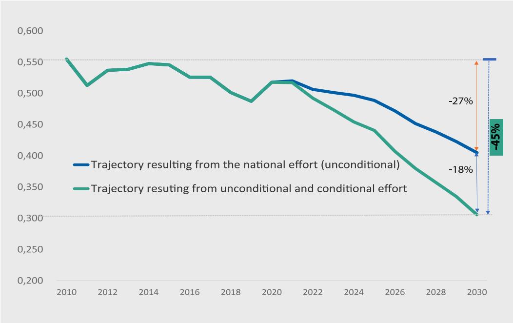
Figure 1: Carbon intensity trajectory according to the conditional and unconditional contribution of Tunisia over the period 2010-2030
Fairness and ambition
As a non-Annex 1 Party to the UNFCCC, Tunisia will effectively contribute to the global effort to mitigate greenhouse gas emissions (GHG). Tunisia considers that its contribution is fair and ambitious, for four main reasons:
Thanks to its total contribution (unconditional and conditional), Tunisia raises its ambition, aiming at a reduction of its carbon intensity in 2030 by 45% compared to that of 2010.
The national effort (unconditional contribution) leads to a 27% reduction in carbon intensity by 2030 compared to that of 2010, or nearly 60% of the target.
Tunisia is committed to reducing its carbon intensity significantly below that of 2010, although it has participated in only 0.07% of global emissions in 2010.
Thanks to its total contribution, by 2030, per capita emissions would reach 2.4 tCO2/ capita, while global emissions in 2010 already reached 7 tCO2/capita.
Geographic coverage
Entire national territory
% of national emissions covered by the mitigation effort
100% of 2010 emissions
Target sectors
Energy (all sources and sectors), Industrial Processes, Agriculture, Forestry and Other Land Use (AFOLU) and Waste
Target gases
CO2, CH4, N2O et HFCs
Financing needs
The implementation of Tunisia’s mitigation contribution requires the mobilization of significant financial resources estimated at around US$14.4 billion to cover the investment needs of the low-carbon pathway over the period 2021-2030. The sectoral distribution of these resources is shown in Table 1 :
Table 1: Investment financing needs to support the NDC low-carbon scenario over the period 2021-2030 (millions US$ 2020)
|
SECTORS/AREAS |
Total |
% |
|
ENERGY |
11785 |
40,0% |
|
Energy efficiency |
5755 |
30,4% |
|
Renewable energy |
43774 |
11,5% |
|
Infrastructure (strengthening of the electrical system) |
1653 |
4,7% |
|
PROCESSES |
675 |
5,2% |
|
AFOLU |
753 |
-- |
|
WASTE |
1182 |
2,2% |
|
Solid waste |
313 |
6,0% |
|
Sanitation |
869 |
|
|
TOTAL |
14 273 |
100% |
Approximately US$ 11.8 billion 2020 would be needed in the particularly capital intensive energy sector, or 82% of the financing needs for GHG mitigation objectives.
National effort and international funding support
The aforementioned funding requirements necessary to achieve the NDC goal fall into two «categories»:
The national effort concerns the resources to be mobilized at the national level; in order to support Tunisia’s unconditional contribution. This effort has been estimated at US$ 3.3 billion for the whole period 2021-2030 (Table 2); i.e., 23% of the total financing needs accompanying the low-carbon transition 2021-2030 envisaged by the updated NDC of Tunisia. It is worth noting that the national effort now covers all sectors, and not only the energy sector, as was the case in the first NDC.
The international support to be mobilized in order to support the realization of the conditional contribution would amount to US$11,1 billion over the period 2021-2030. This support could be mobilized in various forms (concessional lines of credit, grants, direct investments, integration into carbon markets, etc.).
Table 2: Investment financing needs to support the achievement of Tunisia’s «unconditional» and «conditional» NDC objectives for the entire 2021-2030 period (US$ million)
|
Financing needs to meet unconditional goals |
Financing needs to meet conditional goals |
|
|
Energy |
2268 |
9517 |
|
Processes |
174 |
501 |
|
AFOLU |
228 |
525 |
|
Waste |
612 |
570 |
|
TOTAL |
3282 |
11113 |
|
Breakdown |
23% |
77% |
Use of carbon market mechanisms
Tunisia considers, moreover, that it is essential that Parties strengthen their voluntary and concerted cooperation to raise the level of ambition of their mitigation and adaptation actions in the context of the implementation of their nationally determined contributions, as provided for in Article 6 of the Paris Agreement.
In general, Tunisia wishes to engage in these cooperative approaches on all sources eligible for Article 6 mechanisms, and more particularly to develop electricity production from all renewable energy sources, and to improve its energy efficiency, emission control in the process sector, controlled and environmentally improved waste and wastewater management, as well as measures targeting agriculture and forestry and land use.
In order to be ready to access the mechanisms of Article 6, Tunisia is actively preparing the experimentation and the application of pilot carbon pricing instruments, notably through the implementation:
Carbon taxation systems on the consumption of energy products to feed the Energy Transition
A crediting system for GHG mitigation in the electricity sector
A crediting system for the cement sector
Capacity building and technology transfer needs
The total cost to cover capacity building needs in the area of mitigation has been estimated at about US$744 million over the period 2021-2030, of which the largest portion will be for the energy sector, followed by the AFOLU sector.
|
Capacity building needs |
|
|
ENERGY |
589 |
|
Industrial Processes |
34 |
|
AFOLU |
62 |
|
Waste |
59 |
|
TOTAL |
744 |
(*) Approximately US$56 million in additional capacity building is also built directly into the AFOLU programs whose funding requirements are listed in Table 2.
Technology transfer programs will be necessary to allow Tunisia to access the main technological innovation niches related to the low-carbon transition. We can mention without it being exhaustive- several technological innovation niches that can have an important contribution to the low-carbon transition of Tunisia:
The first of these niches concerns the mass development of renewable energy, which includes mainly five main fields: wind (on-shore and off-shore), photovoltaic, concentrated solar power (CSP), biogas and green hydrogen.
The choice of the best technologies and energy practices for the building5 sector.
The participation through international partnerships, into major research on sustainable mobility (electric, hydrogen, etc.), and storage systems, as well as immediate applications on captive fleets (e.g., Post Office, public transport, etc.).
The follow-up of world mutations in terms of work modes, and more particularly in connection with the development of telework.
Active involvement in international partnerships for research and development of mechanisms for managed ecosystems and soils for productive purposes, preservation against all forms of degradation, restoration and increase carbon sequestration.
Tunisia also wishes to follow closely the major directions of research to reduce CH4 emissions from livestock, through policies focused on (a) livestock feeding methods, in parallel with increasing yields, (b) the valorisation, especially energy, of agricultural by-products in general and livestock in particular.
The position on the technological niches in the field of CO2 capture and storage (CCS), by integrating into the major research initiatives and industrial applications.
Preparation of the NDC update
The updated NDC has been developed on the basis of broad consultations6 with the main stakeholders concerned by the climate change issue in Tunisia, including public institutions, private sector, civil society and experts.
The elaboration of Tunisia’s contribution was also largely based on existing sectoral and horizontal strategies, such as the national strategy on climate change elaborated in 2012, the energy effciency 2030 transition strategy, as well as the sectoral strategies AFOLU, and waste, without forgetting the various sub-sectoral initiatives (e.g., cement, HFC, Nitric acid) by multiplying the installation projects of photovoltaic systems in its treatment plants.
Inventory methodology
Inventory conducted in accordance with IPCC 2006 guidelines.
Global warming potential (GWP)
GWP values used from the IPCC Fourth Assessment Report- AR4 - Climate Change 2007:
CH4 = 25
N2O = 298
HFC: GWP variable according to the substances used
Baseline scenario
The development of the baseline scenario was based on extensive modelling work developed for the different sectors. The approaches for calculating GHG emissions are directly derived from the IPCC 2006 guidelines. The calculation of emissions is based on the prediction of activity data, which is inferred by simulation, using the following approaches:
Energy sector: The assessment of emissions in the baseline scenario was based on a sector-specific final energy demand modelling approach (including the transport sector) and by energy form using the ENERMED7 forecasting model.
Baseline emissions are assessed year by year from 2021 to 2030, using the sectoral approach of the 2006 IPCC guidelines.The updated NDC comprehensively covers these sources of emissions, unlike the first NDC, which did not cover fugitive and the first NDC, which did not cover fugitive emissions or those related to energy consumption of oil and gas fields, gas processing units and Algerian-Italian gas pipeline facilities.
Industrial processes: The assessment of emissions in the baseline scenario was based on a trend extension of the activity data for the four main sources of emissions in the sector; representing 96% of the sector’s emissions, according to their relationship with GDP and population (for cement and bricks and ceramics), the 2010-2020 trend trajectory for HFCs, and the fixed baseline value for the nitric acid plant, and finally a trend extension of the remaining minimal sources according to their observed relationship with GDP.
Agriculture, Forest and Other Land Use (AFOLU): The baseline considers a continuation of the trend of the efforts led by the Ministry of Agriculture and Forestry, and observed during the period 2015-2020, regarding reforestation and conservation measures, as well as the rates of progression of arboriculture. This trend scenario will consolidate the status of net absorber of this source of emissions/ absorptions.
Waste:
Solid waste : The baseline considers the continuation of the same waste management practices, by burying solid waste in controlled landfills. The baseline considers the continuation -until 2025- of the degassing systems installed in the two CDM projects,8 based on the same biogas flaring levels as the year 2020.
Sanitation/Wastewater Treatment : The baseline considers the continuation -until 2030- of the same sanitation practices observed during the 2015-2020 period, which have registered a significant improvement in their GHG performance compared to the BaU considered in the first NDC.
Mitigation scenario
Energy sector : The NDC scenario is a low carbon scenario based on the implementation of ambitious energy efficiency and renewable energy development programs. The emissions trajectory was first simulated through a modelling method using the ENERMED foresight tool, as for the baseline case.
Thanks to the LC scenario, emissions from the energy sector would be 34% lower than in the BaU scenario, totalling less than 27 MteCO2 by 2030, which would represent a 9% decrease compared to 2010.
The avoided emissions thanks to the LC scenario (difference with the BaU emissions level), according to the top-down approach, would be of the order of 63 MteCO2 cumulated over the period 2021-2030.
Thanks to such GHG mitigation results induced by the energy transition policy advocated by the State, the energy sector would reduce its carbon intensity in 2030 by 44% compared to the year 2010; i.e., an average annual decrease of 4.7%.
The following two figures present the GHG emission reductions respectively by energy efficiency measures by sector and by renewable energy by technology.
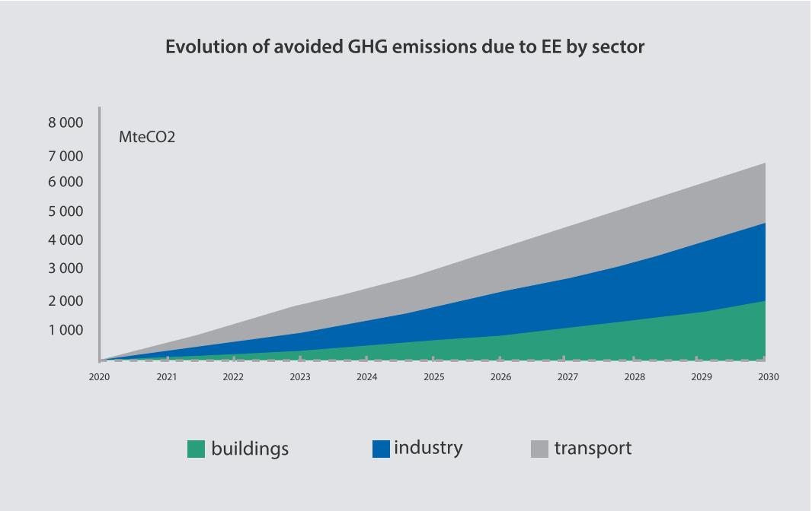
Figure 2: Future GHG emission reduction trajectories from energy efficiency (by sector)
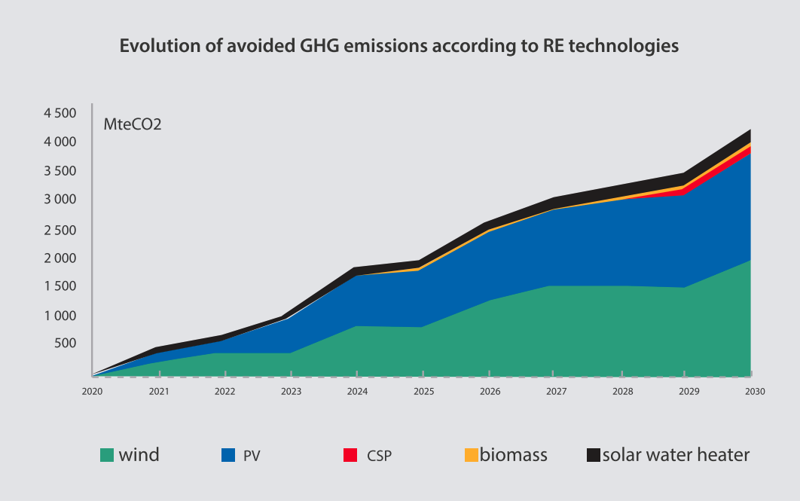
Figure 3: Future renewable GHG emission reduction trajectories by technology
Emissions reductions due to energy efficiency over the period 2021-2030 would come first from the rational use of energy in industry (38%). The transport sector comes a close second (37%), mainly due to the organization of urban travel in large cities and the introduction of electric vehicles. The buildings sector accounts for a quarter of the emissions reductions resulting from energy efficiency.
On the other hand, 45% of the emissions reductions from the energy sector over the entire 2021-2030 period would be achieved based on unconditional national efforts, and 55% through international support required for this purpose.
All these emission reductions lead to a 38% decrease in the carbon intensity of the energy sector.
Industrial Processes : The emissions trajectory of the process sector was simulated based on models specifically developed in separate Excel spreadsheets for the cement, bricks and ceramics and other process sources sectors.
For HFCs, the simulation model was developed in Excel spreadsheets using the IPCC calculation models for these substances.
The LC scenario of the processes sector considers three main actions:
Launch of the cement NAMA and carbon pricing instruments, which would include a mitigation program along 4 lines: (i) Energy efficiency, (ii) Renewable energy, (iii) Use of solid waste alternative fuels (RDF), and (iv) Better segmentation of the cement market to lower the clinker/cement ratio.
The impacts of cement market segmentation on clinker process emissions are included and credited to the process sector. However, the results of the first three actions are incorporated into the LC scenario of the energy sector.
Initiation of the catalytic N2O9 destruction project in the nitric acid plant starting in 2022.
Launch of the HFC use reduction program, to comply with the objectives of the Kigali Amendment. Through this program, all stakeholders in the HFC sector will be mobilized for a coordinated intervention in several areas:
Implementation of an HFC import license system (online system already operational) and annual reporting.
Interventions and legal, regulatory and normative adjustments leading to compliance with the commitments of Kigali.
Choice of the most appropriate technology options for Tunisia, based on a refinement of the technical-economic analyses of these options.
Organization and programming of the entire training process for stakeholders (technicians, engineers, etc.) in order to master all the conversion chains to new low Global Warming Potential (GWP) substances.
Mobilization of the means and resources (human and financial) necessary to begin the process and design the programs and support mechanisms related to the multilateral fund of the Montreal Protocol, on the one hand, and the support mechanisms related to the Paris Agreement, on the other.
Tunisia will also launch the PROMOFRIGO and PROMOCLIM projects, which will operate mainly on the "bank" of HFCs by removing from the current fleet via dedicated mechanisms old and therefore not very energy efficient appliances using HFCs with high GWP, by destroying and destroying and regenerating the HFCs that will be recovered from the appliances to be appliances to be scrapped every year.
Including all of these mitigation measures, GHG emissions from the process sector would reach 7.2 MtCO2 in 2030, a 13% decrease (1.1 MtCO2) compared to the same year in the BaU scenario.
Over the period 2021-2030, the LC scenario would accumulate 8.4 MtCO2 of avoided emissions; 55% of which would result from actions on HFCs, 31% from actions on N2O, and the remainder from efforts -mainly regulatory-based- made by the cement sector.
Moreover, 43% of these results would be achieved on the basis of unconditional national efforts, and 57% through international support required for this purpose.
Agriculture10 Forestry and Other Land Use (AFOLU) : The estimates of avoidable emissions are based on the 2006 IPCC guidelines and the most recent national and international literature and studies on mitigation actions.
The LC scenario of the AFOLU sector now considers a classification according to integrated landscape approaches, combining agricultural, forest and rangeland landscapes, and focusing on:11
The rationalization of the use of cultivated land through the restoration of degraded agrosystems.
Sustainable management of forests and rangelands and restoration of degraded forest and pastoral landscapes.
The valorisation of synergies between the three climate-biodiversity and desertification conventions; in particular by supporting the implementation of payment systems for environmental/ecosystem services.
This integrated intervention approach will differentiate actions by land use type and by region.
Through this integrated intervention approach, the LC scenario will induce the injection of greater resources in favour of the rural environment, to support the GHG mitigation policy in a fair and appropriate manner. These resources will ensure a better inclusion of all rural actors (women, youth, farmers’ organizations, etc.) and act as an engine of growth for the rural area, which will reintegrate the dynamics of growth and national development.
From this perspective, the GHG impacts of the proposed AFOLU options would represent
more of a co-benefit to the climate than the actual target of the proposed program.
In addition to the integrated actions, the LC scenario for the agricultural sector considers a reinforcement of the actions already considered in the baseline (Incorporation of poultry droppings in composting processes, Organic Agriculture, Encouragement of legumes in field crops and Optimization of the use of synthetic mineral fertilizers), and the addition of five mitigation actions (feed additions supporting livestock productivity and inducing the decrease of enteric emissions, Conservation Agriculture, Energy valorisation of droppings, Energy valorisation of bovine manure, and Energy valorisation of margins).12
Net emissions from the AFOLU sector are in the form of negative balances in both the BaU and LC scenarios, which means that removals are always greater than emissions over the entire trajectory, and therefore more than offset emissions.
The Low Carbon (LC) scenario, however, presents a net balance 58% better than that of the BaU scenario. The net additional absorptions achieved thanks to the LC scenario compared to the BaU net absorption level, would be of the order of 2.5 MteCO2 by the year 2030. In cumulative terms over the period 2021-2030, they would total 9 MteCO2, of which 35% would result from emission reduction measures, and 65% from carbon absorption measures. These results would be achieved in equal parts (50%-50%) based on unconditional national efforts and international support.
Waste :
For solid waste, the IPCC 2006 emission calculation model for GHG inventory purposes was transformed into a forward-looking tool and used in the modelling of future emissions.
The potential impacts of landfill energy projects are incorporated into the low-carbon scenario for the energy sector.
The sanitation sector was treated using the same approach as the solid waste sector. The estimation of avoidable emissions was done on the basis of the IPCC 2006 guidelines
The impacts of the sludge recovery and cogeneration project to be initiated by the sanitation sector refer only to the emission avoidances induced by the reduction of storage times and rates and the recovery of CH4, respectively. All other GHG impacts, including energy recovery projects, are accounted for in the energy sector.
Solid waste:
The LC scenario for the solid waste sector considers eight main actions:
Reduction of the average daily amount of household waste produced by city (kg/ capita/day) in 2030 by 7% compared to 2020.
Increase the material recycling rate of household waste produced in urban areas by 13% in 2030 compared to 2020.
Increase the rate of organic (composting) and/or energy (RDF and electricity) in 2030 by 30% compared to 2020 reductions (i)from RDF use by the cement sector are credited to the energy sector).
Reduction in the rate of controlled landfilling of final waste (including through RDF production, and MBT, and any other recovery technology), in 2030 by 54% compared to 2020.
Systematization of degassing at least until 2030 on controlled landfills already equipped with systems.
Generalization of electricity production from landfill biogas (reduction of emissions credited to the energy sector)
Energy recovery from margins (reduction of emissions credited to the energy sector)
Sanitation/Wastewater Treatment:
The LC scenario for the sanitation sector considers six main actions already identified by the Sanitation NAMA developed in 2013, and obviously still on the agenda insofar as they are still included in NSO’s development priorities:
Improvement of the wastewater treatment rate (90% by 2030)
Improved management of WWTPs (urban and rural), including the rehabilitation of several of them,
Improvement of industrial connection and reduction of COD (aerobic treatment and management optimization)
Recovery of sludge (in the agricultural sector and possibly in cement plants)
Improvement of energy efficiency and development of cogeneration
Installation of photovoltaic systems
Thus, in 2030, the emissions of the waste sector, according to the Low Carbon Scenarios (LC), would reach 4 MteCO2; that is to say 1.2 MteCO2 (23%) below the emissions of the BaU scenario.
In cumulative terms over the period 2021-2030, the waste sector LC would reduce emissions by 5.5 MtCO2 compared to the BAU, 92% of which would come from actions targeting solid waste, with the remainder coming from the sanitation sector. These results would be achieved by 58% based on unconditional national efforts, and 42% through international support.
Local variations of GHG mitigation policies
Tunisian cities are growing at a rapid pace, and concentrate an increasing share of the national population, as well as the most of the economic activities, and therefore of the GDP. They therefore have a very important responsibility -direct and indirect- in the national emissions of GHG. In Tunisia, it's estimated that at least 50% of emissions occur within urban areas, through industrial activities and intercommunal transport. but also sources from the building sector (residential and the building sector (residential and tertiary).
Tunisian cities should therefore be considered as essential pillars of national mitigation policies through relevant and efficient solutions and choices focused on the transition to new models of urban development and planning and lifestyles that are more climate- friendly but also resilient to climate impacts.
Better local development planning should lead to the consideration of of climate issues, according to the specificities inherent to each Tunisian municipality, and by putting the access on the priorities of a better energy efficiency, the use of renewable energies, better urban mobility, including cleaner modes of transport, as well as transport, as well as a generalized improvement of health and living conditions through an integrated conditions through an integrated liquid and solid waste management policy.
The following figure presents the respective GHG emission trajectories of the baseline, the unconditional national effort and the updated NDC low-carbon scenario (considering substantial international support).
It is useful to recall that the net emissions -in absolute terms- of the updated NDC low- carbon scenario would be 33% below the net emissions of the first NDC low-carbon scenario by 2030. Even better, they would be well below the 2010 emission levels (-11%).
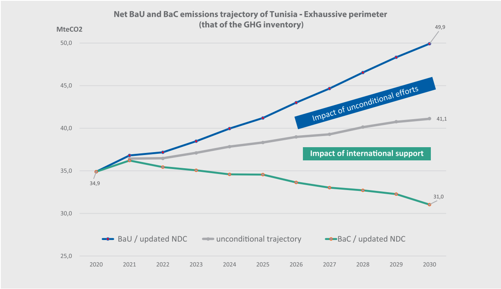
Figure 4: Trajectories of GHG emissions according to the scenarios of baseline, unconditional effort and NDC
The following table presents GHG emissions according to the three scenarios for 2020, 2025 and 2030.
Table 4: GHG emissions – Sources covered exhaustively – according to the three scenarios for 2020, 2025 and 2030
|
2010 |
2020 |
2025 |
2030 |
|
|
Baseline emissions |
35,0 |
34,9 |
41,2 |
49,9 |
|
Emissions after unconditional efforts |
35,0 |
34,9 |
38,3 |
41,1 |
|
Emissions including conditional and unconditional efforts |
35,0 |
34,9 |
34,6 |
31,0 |
Emission reductions
Table 5 presents the unconditional and conditional reductions in GHG emissions, cumulative 2021-2030; and by 2025 and 2030. Thus, Tunisia’s unconditional contribution would amount to almost 40 MteCO2, i.e., 45% of the total GHG impact of the updated NDC; the remainder (47,9 MteCO2) resulting from conditional actions, i.e., 55% of the total effort.
Table 5: Conditional and unconditional GHG emission reductions
|
2025 |
2030 |
Cumuli 2021-2030 |
|
|
Unconditional |
2,9 |
8,8 |
39,6 |
|
Conditional |
3,7 |
10,1 |
47,9 |
|
Total |
6,6 |
18,9 |
87,5 |
Sectoral contribution to emission reductions
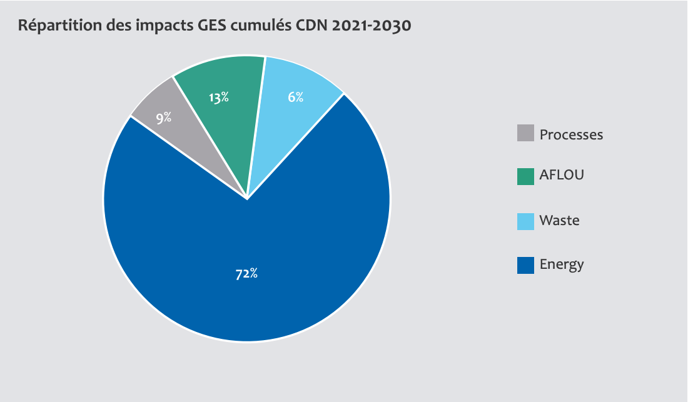
Figure 5: Sectoral distribution of cumulative (2021-2030) GHG emission reductions from the implementation of the updated low-carbon scenario
Energy sector
Primary energy savings: 4 Mtoe in 2030 and about 20 Mtoe cumulative over the period 2021-2030.
Macro-economic impacts13: The implementation of the NDC should allow a GDP gain over the whole period covered by the updated NDC (2021-2030), of about 1% compared to the baseline scenario, as well as the creation of about 12,000 additional jobs in the energy sector compared to the BaU scenario, thanks to EE and RE measures.
Fight against fuel poverty: reduction of the energy bill of consumers and particularly of the poorest population classes.
Processes sector
Reduction of pollution
Lower cement production costs for the benefit of consumers and related sectors
Agriculture, Forestry and Other Land Use
Replacement of the rural space at the heart of the country’s development
Increase in the income of the rural population thanks to (i) the restoration of ecosystems and soils, and the improvement of yields from related activities, (ii) the reinjection of significant additional resources supporting the LC scenario, (iii) the improvement of the fodder balance for livestock feed
Reduction of pollution of the agricultural environment (soil and water) through organic farming practices and optimization of chemical fertilizer use
Better conservation of water resources
Improvement of manure quality and organic recovery of animal waste
Creation of jobs and income generating activities in rural areas
Beneficial impacts of more equal distribution of the fruits of growth on all rural categories (women, youth, disadvantaged trades)
Stabilization of populations and fight against rural exodus
Contribution to the objectives of other conventions (biodiversity, desertification)
Waste
Optimization of the use of national resources, through the recovery of waste
Preservation of soil, water resources and public health through better management of solid and liquid waste
Better exploitation of water resources, through the reuse of treated wastewater
Emergence of new economic sectors and job creation
Communities
Better quality of life
Eco-responsible cities
Emergence of green businesses
The updated version of the adaptation component of Tunisia’s Nationally Determined Contribution (NDC) is based on a precise review of the exposure of national and sectoral vulnerabilities. This review is based on finer climate projections allowing a more robust downscaling to the level of territories.
In addition, the update of the NDC integrates three new cross-cutting dimensions (gender, land use planning and natural disaster risk reduction) axes and measures aimed at limiting the impacts of climate change by 2050.
2.1.1. Water resources
Climate projections14 indicate that water resources will be particularly exposed to i) increased demand for water and conflicts of use; ii) overexploitation of groundwater; iii) declining water stocks, and iv) degradation of water quality including salinization of coastal aquifers. The total loss of water resources from these aquifers by 2050 has been estimated at about 220 million m3 per year, which represents about 75% of the total coastal15 water resources. The capacity of the water sector to adapt to these impacts is considered moderate to low. The most vulnerable groups of people in rural areas are women farmers and children, as well as farmers with small areas16. The most vulnerable groups in urban and peri-urban areas are the poor, the unemployed, and the elderly.
2.1.2. Agricultural production
Climate projections predict an increase in the frequency and intensity of droughts. These will affect cereal production, which would fall by almost 40% by 2050 according to the RCP8.517 scenario. The drop in yields that will affect olive production could reach 32%. The share of agricultural production in the national GDP would decrease by 5% to 10% in 2030, depending on the scenarios of economic openness of the agricultural sector. The impacts will be reflected in a drop in yields and a reduction in the area of tree and cereal crops, a loss of soil fertility and the area of arable land. The highest level of vulnerability is observed in central and southern Tunisia, and the level of vulnerability is particularly critical in the south (east and west).
2.1.3. Natural Ecosystems
There are many challenges to the balance of natural ecosystems, their capacity to regenerate and the maintenance of the ecosystem goods and services they provide. On biodiversity itself, the threats are the result of an interaction of factors, notably anthropogenic, accentuated directly or indirectly by climate change, including the destruction, in particular by forest fires, and the fragmentation of habitats, especially in forest and steppe environments, air, soil and freshwater pollution at the level of coasts and agrosystems, the overexploitation of terrestrial and marine animal and plant resources and the intrusion of invasive alien species.
Climate projections predict more hot days, greater water stress, and irregular precipitation. These impacts would result in fewer opportunities for biological recovery, multiplication of natural species, and renewal of seed stocks in rangeland, steppe, and forest soils. These impacts will affect the yields of wood and non-wood forest products and fodder in natural ecosystems. Heavy losses are to be expected in southern Tunisia where most of the available pastoral land is located. Thus, the areas favourable to pastoral plants are likely to decrease by an average of 19% and to move up towards the north of Tunisia.
2.1.4. Coastal zones
On the Tunisian coast, climate change will be accompanied by a rise in sea level (ENM) and an increase in temperature, salinity and acidity of water. These effects of climate change will lead to other impacts such as the loss of built-up areas, coastal and agricultural infrastructure, erosion of the coastline and the degradation of coastal ecosystems. Thus, in the coastal zone, more than 3100 hectares of urban areas are considered vulnerable and threatened by submersion. In addition, on the Tunisian eastern coastal area a large part of the water resource is provided by the coastal water tables that are highly vulnerable to the ENM consequences of salinization. Thus, 44% of the Tunisian coastline is classified as vulnerable to very highly vulnerable, while the coastline is moderately vulnerable to 24% and those weakly to very weakly vulnerable are around 32%.
2.1.5. Health
The main health impacts due to climate change concern the recrudescence and emergence of vector-borne diseases; the increase in the incidence of water-borne and food-borne diseases; the aggravation of diseases related to air pollution and the increase in the frequency and intensification of the health effects of floods. We could also fear the emergence of new diseases still absent from the territory such as the Chikungunya virus fever or the Zika virus fever, which are present on the African continent. In addition, there is the effect of floods with the risk of destruction of drinking water distribution and sanitation infrastructure and the contamination of surface and ground water. Finally, under the effect of pollution by fine particles and ozone coupled with that of pollen allergens, respiratory diseases could be exacerbated.
The interactions between the COVID-19 pandemic and climate change are presented in several reports as cumulative effects. In a scenario where both effects, pandemic and climate change, develop at the same time, human populations with limited resources and capacities would tend to be more vulnerable to exceptional crises. Consequently, this global health crisis would exacerbate already existing inequalities.
2.1.6. Tourism
The acceleration of sea level rise (ENM) is a major threat to tourism, which remains essentially seaside in Tunisia. The retreat of the coastline is done at rates often between 0.5 and 1.5 m / year, and nearly 440 km of coastline, or 26.6% of the Tunisian coastline, have been assessed as having a very high vulnerability to marine submersion and erosion. This particularly concerns the gulfs of Hammamet (40% of total beaches), Tunis (30% of total beaches) and to a lesser extent at the islands of Djerba and Kerkennah (respectively 24% and 14% of total beaches). Although the sector consumes less than 1% of the country’s water potential, the water stress that Tunisia is already experiencing will be reinforced, which will have repercussions on tourism facilities in terms of operating costs and health safety. The intensification of heat waves should also affect financially the sector in their management of energy, especially dedicated to the air conditioning of buildings. Finally, the fragility of jobs is a direct consequence of the disruption of tourism activity. The average loss of jobs due to the phenomenon of climate change by 2030 is estimated at 1000 jobs per year.
2.1.7. New cross-cutting areas
This update of the NDC is enriched by the inclusion of three areas that were not sufficiently taken into account in the first NDC, namely: gender, land use planning and climate change disaster risk reduction (DRR).
Despite economic conditions that have been severely degraded by the impacts of the Covid-19 pandemic, which has severely affected the country's economy and vulnerable groups particularly women, Tunisia shows its will to continue the legal and institutional progress for the institutional advances for the sustainable economic and social reinforcement, and thus maintains its status its status as a vanguard country in the Arab world in terms of women's rights and emancipation and its emancipation.
This status implies that women are entrusted with an important role in the fight against climate change.
The dramatic consequences of past and recent floods caused by a land-use planning approach that approach to land use planning that does not sufficiently integrate the effects of climate change has the importance of taking into account the climate in land use planning in Tunisia.
The effects of climate change are more pronounced in cities where the urbanization movement is accelerated by the extension of urban extensions of urban perimeters. This urban extension is due to a marked peri-urbanization marked, in addition to the formal modes of land and real estate production, by the proliferation of non-regulatory neighborhoods and informal occupations on floodable land and on drainage lines. In addition to this, there is also the inadequacy of infrastructure.
The increase in intensity and frequency of extreme events under the effect of climate change climate change torrential rains in a limited time, extreme heat waves, marine heat waves, marine submersion, storms, etc.) have shown the limits of the traditional design of urban spaces in Tunisia. This leads to the necessary consideration of of the climate risk in the extensions of the current cities, the design of buildings or during the elaboration of urban development plans.
The Tunisian territories do not all have the same capacity to adapt to climate disruption. These territorial disparities are likely to be strongly accentuated by the climatic drift accentuated the next decades which calls for strong responses.
Vulnerability studies show without a doubt that the effects of climate change will significantly increase the country’s exposure to the risks of flooding, particularly in urban areas, rising sea levels and flooding along the coast, more frequent and severe droughts in the south, and the occurrence of forest fires, particularly in the north and centre-west of the country. In addition to endangering human lives that need to be protected, the impacts of these extreme events, which are thus amplified, create risks of social conflicts that threaten the political stability of the country.
The impacts of these extreme events are already and will be increasingly heavy on the national budget due to the very high costs of response and rehabilitation/reconstruction measures.
2.2.1 The Resilience Star
The general objective of the updated NDC to 2030 is to «promote a Tunisia resilient to climate change, having significantly reduced vulnerabilities and strengthened the adaptive capacities of its ecosystems, its population, its economy, its territories, and operated the necessary transformations, able to ensure a model of socio-economic development inclusive and sustainable and thereby contribute to a more resilient world». This objective is fully in line with the resilience trajectory of the NSCRD, which is aimed at the 2050 horizon.
Faced with more frequent and intense climate hazards, a resilient Tunisia must be able to:
Ensure a renewed and shared economic growth can lead to progress, and create jobs for all.
Anticipate climate disturbances (sudden or slow).
Reduce or absorb the effects.
To recover and bounce back thanks to adaptation, solidarity and innovation.
To evolve towards a new state of dynamic equilibrium and to transform itself while preserving the functionality and performance of its natural and human systems.
To be achieved, this objective must be based on a comprehensive and cross-cutting framework for adaptation that concerns all aspects of the nation and its development. The updated NDC therefore proposes a paradigm shift and the adoption of a systemic and cross-sectoral approach, making it possible to define resilience in its different dimensions: food; water; ecological; social; economic; territorial; health and to natural disasters related to climate change.
This approach forms the «resilience star» (Figure 6) which is designed as a structuring framework to support Tunisian actors and their technical and financial partners in their efforts to strengthen adaptation, risk reduction and anticipation capacities. This star, like the explorers of the past, must serve as a course for the country in its quest for future resilience by 2050, with 2030 as the transformative deadline for putting Tunisia on this trajectory.
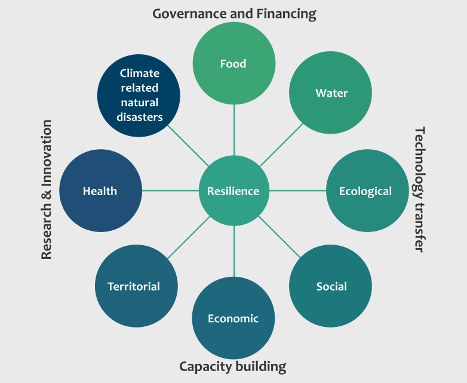
Figure 6 : The Star of Tunisian Resilience
Food resilience links to sectors/areas
General objective of food resilience by 2030
To enable the agricultural, livestock and fisheries sector to ensure food security for the Tunisian population in a sustainable manner, in sufficient quantity and with the required quality. This objective will be achieved through the implementation of adequate and appropriate measures to improve the resilience of production systems, channels, markets ... etc., and producers and other actors. It is a question of modernizing the sector through its digitalization, creating, processing, and sharing information with the actors in order to improve the monitoring and the reaction to the effects of climate change. For the structuring measures of adaptation, they will concern the strategic productions (such as cereals, olives, meats, seafood ... etc.) and production factors (soil, seeds, ...) as well as markets and other channels.
|
1- Water |
4- Coastal zones |
7- Gender |
|
2- Agriculture |
5- Health |
8- Land use planning |
|
3- Ecosystems |
9- DRR |
Links with the Sustainable Development Goals
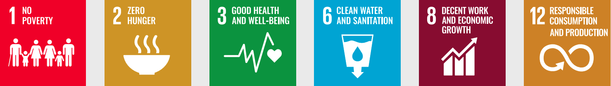
Food Resilience Priorities (FRP)
FRP 1: Achieving the digital transition of agro-sylvo-pastoral production systems, livestock, fisheries and aquaculture, improving the sharing of information, data and knowledge for a better resilience to the effects of climate change of territories and societies.
FRP 2: Anticipate and support the transition to an agriculture resilient to the effects of climate change (agricultural products, livestock, fisheries and aquaculture, territories and farmers)
The main challenges of adaptation to the impacts of climate change on water resources are:
Controlling water demand and resolving conflicts of use.
Protecting groundwater against overexploitation.
To fight against erosion and silting of reservoirs.
To fight against water pollution and the degradation of water quality.
Promote the reuse of treated wastewater (TME) and desalination.
Water resilience goals for 2030
To ensure the Tunisian population and the sectors using water resources a sufficient, continuous and quality water supply by 2030. This means mobilizing all the resources still possible in the country, improving the management of stocks, ensuring the balance between the sectors requesting water (including ecological water) and avoiding potential conflicts, improving the quality of purified water, and massively increasing the use of non- conventional water for the benefit of sectors not requiring green water. There is also a need to focus on transferring knowledge and skills to practitioners, introducing or reintroducing good water management practices, exploring nature-based solutions, and encouraging research and action.
Water resilience links to sectors/areas
|
1- Water |
4- Coastal zones |
7- Gender |
|
2- Agriculture |
5- Health |
8- Land use planning |
|
3- Ecosystems |
6- Tourism |
9- DRR |
Links with the Sustainable Development Goals
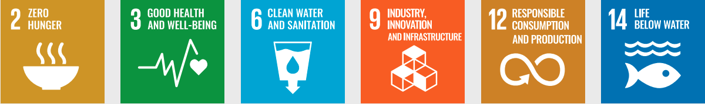
Water Resilience Priorities (WRP)
WRP1: Improve the quantitative and qualitative management of conventional water resources in the face of climate change impacts
WRP2: Massify the use of non-conventional water resources to face the scarcity of the resource under the effect of climate change
WRP3: Strengthen the technical, scientific, and institutional capacities of water stakeholders to adapt to climate change
The social resilience targeted by Tunisia for the 2030 horizon must be accompanied by fair adaptation measures that create jobs for young people and generate economic growth that is redistributed to the most disadvantaged, while ensuring that no one is left behind and that social disparities are reduced in favour of resilient, fairer and more gender-sensitive development. The search for greater social equity can be achieved by taking into account cross-cutting.
Social resilience goals for 2030
Reduce social disparities for more just resilient development to ultimately support systemic integration of a purposeful and institutionalized gender transformational approach across all key adaptation sectors to strengthen the democratic foundation for sustainable progress of the resilient society for all.
Social resilience links to sectors/areas
|
1- Water |
4- Coastal zones |
7- Gender |
|
2- Agriculture |
5- Health |
8- Land use planning |
|
3- Ecosystems |
6- Tourism |
9- DRR |
Links with the Sustainable Development Goals
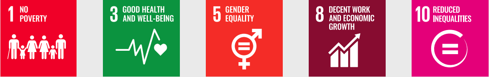
Social Resilience Priorities (SRP)
SRP1: Endorse the national policy on gender mainstreaming and climate change:
SRP2: Integrate an inclusive and systemic approach to gender in sectoral measures of agricultural policy, water resources management, ecosystem preservation, CCR intervention areas, health policy and alternative and sustainable tourism offer.
SRP3: Limit the impacts of climate change on poverty, strengthen social protection and ensure access to sustainable employment for households and communities most vulnerable to climate change («leave no one behind»)
To respond globally to the challenges of equitable adaptation, social resilience must be reinforced by its transversal corollary, which is linked to the living environment of the populations, namely territorial resilience. To this end, it is imperative to integrate adaptation into decisions and planning instruments for development and territorial planning. This territorial dimension was not taken into account in the 1st NDC of Tunisia. It is now a matter of integrating land use planning measures considering the aspirations of communities’ needs and the territorial disparities that have increased in recent years due to a lack of means to cope with the effects of climate change in the most vulnerable regions. These choices have ended up obliterating the social aspects thus releasing the loss of control of space, the devaluation of traditional developments (micro-hydraulic, housing type Dar ...) where men and women master and appropriate the space and territoriality of their experience and collective memory.
Objectives of territorial resilience by 2030
Reduce territorial disparities in favour of a more just and resilient development
Links of territorial resilience to sectors/areas
|
7- Gender |
||
|
5- Health |
8- Land use planning |
|
|
3- Ecosystems |
9- DRR |
Links with the Sustainable Development Goals
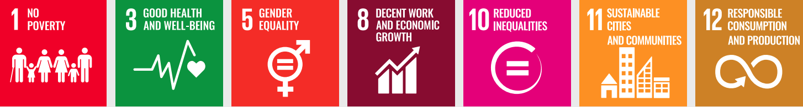
Territorial Resilience Priorities (TRP)
TRP 1: Establish a national framework for climate change adaptation that takes into account land-use planning
TRP 2: Integrate vulnerability and risks related to climate change into territorial planning processes
TRP 3: Produce and share information, knowledge and know-how to improve the resilience of the coastal sector to the effects of climate change and natural disasters
TRP 4: Develop and integrate innovative processes, methods, and tools that incorporate climate change and natural disaster risks into planning in the coastal sector
TRP 5: Develop a program for the management, protection and rehabilitation of coastal and marine landscapes and ecosystems
2.2.1.5 Economic resilience
Faced with climate change, the objective for Tunisia will be to mobilize the economic sectors to ensure that economic actors anticipate the risks identified and deploy the necessary means (financial, human, infrastructure, etc.) to reduce their economic vulnerability and the consequences on jobs. The objective aimed at 2030 is therefore to limit the impacts of climate change on economic sectors and support their gradual transformation to more resilient models to ensure sustainable growth and job creation. Tunisia is committed to supporting the various sectors in the development of resilient activities that respect the ecosystems on which they rely. The public authorities will support prospective work to raise awareness and mobilize economic actors for greater integration of climate risks in their development and investment strategy. The vulnerabilities and costs of inaction and adaptation for a certain number of priority sectors (tourism, wood, agri-food, industry, transport, buildings/construction, digital, banking and finance, etc.) will be assessed and support measures identified. Risk assessment tools and criteria and communication on good practices will be proposed to help economic actors consider climate change and its effects on project profitability and investment decisions. Given its weight in the national economy and the impacts of climate change (beach erosion, water stress threatening the supply of drinking water, discomfort due to heat waves, etc.), tourism is one of the main challenges and a pilot area for the adaptation of Tunisian economic sectors.
Objectives of economic resilience by 2030
Tunisia’s action will involve a shared assessment of the risks associated with climate change in the economic sectors, raising the awareness of the actors concerned, and then strengthening the technical capacity to adapt infrastructures and services. The objective will be to limit the impacts of climate change on the economic sectors and to support their gradual transformation towards more resilient models to ensure sustainable growth and job creation.
Economic resilience links to sectors/areas
|
1- Water |
4- Coastal zones |
7- Gender |
|
2- Agriculture |
5- Health |
8- Land use planning |
|
3- Ecosystems |
6- Tourism |
9- DRR |
Links with the Sustainable Development Goals
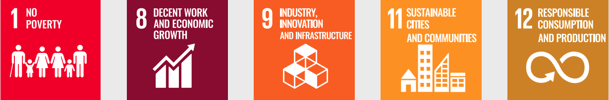
Economic resilience priorities (ERP)
ERP 1: Modernize information management, facilitate access to and sharing of knowledge, and predict risks related to climate change
ERP 2: Increase the resilience of economic sectors, including tourism and its sub-sectors, of their actors and rationalize the use of resources
ERP 3: Improve the attractiveness of the territories and diversify the tourism offer by promoting the territories
Objectives of health resilience by 2030
Controlling health risks related to climate change and integrating their management through a more resilient health system.
Health resilience links to sectors/areas
|
1- Water |
||
|
5- Health |
||
|
9- DRR |
Links with the Sustainable Development Goals
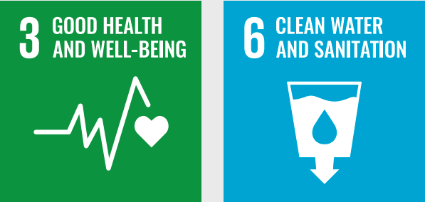
Health Resilience Priorities (HRP)
HRP 1: Strengthen the surveillance of climate-sensitive diseases and develop the capacity for early detection and early warning of phenomena with epidemic potential
HRP 2: Develop and empower the health system to address climate change-related health risks
HRP 3: Strengthen the role of health in leadership and intersectoral collaboration and promote applied research
Tunisia has a new objective of ecological resilience which, in addition to the resilience of productive ecosystems, addresses together the challenges of combating climate change and the loss of biological diversity considering the interdependence between these topics (approach «nexus» climate biodiversity), to move towards an ecological and ecosystem resilience in Tunisia. This objective of resilience is based on the objectives, axes and national priorities of the Strategy and National Action Plan for Biodiversity (NBSAP) established by Tunisia by 2030 under the Convention on Biological Diversity (CBD), with the aim of having a biodiversity resilient to climate change by 2030, safe from threats, conserved and managed to contribute sustainably to the socio-economic development of the country. This goal responds to priority 2 of the NBSAP 2018 - 2030, which calls for the integration of biodiversity values into all national and societal policies. This objective must contribute to the reduction of the rate of depletion of the components of biodiversity with its three hierarchical levels (ecosystems, species, and genetic diversity) and the sustainable use of biological diversity by strengthening ecosystem services, reducing the pressures resulting from the negative impacts of climate change but also the risks of natural disasters that are exacerbated by these impacts.
Objectives of ecological resilience by 2030
To develop biodiversity that is resilient to climate change, safe from threats, conserved and managed to contribute sustainably to the country’s socio-economic development.
Links of ecological resilience to sectors/areas
To this end, Tunisia wishes to engage in the use of Nature-based Solutions (NBS) to implement this resilience objective of the updated NDC, especially for the restoration of protected areas and the regeneration of wetlands.
|
1- Water |
4- Coastal zones |
|
|
8- Land use planning |
||
|
3- Ecosystems |
9- DRR |
Links to the Sustainable Development Goals
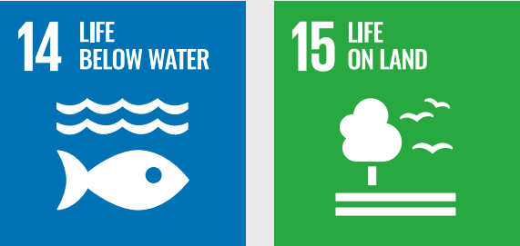
Ecological Resilience Priorities (ERP)
ERP 1 (productive ecosystems): monitor, protect, rehabilitate, and rationalize the use of natural resources, achieve neutrality in land degradation and ensure the sustainability of goods and services provided by natural ecosystems.
ERP 2 (protection and conservation of biodiversity): measures selected from the Strategy and National Action Plan for Biodiversity (NBSAP) established by Tunisia by 2030 under the Convention on Biological Diversity (CBD).
Establish DRR as a cross-cutting, multi-level approach to the prevention and management of climate-related natural disaster risks to ensure the safety of people and property, protect ecosystems and promote peace and social cohesion, which must be articulated with other cross-cutting objectives and sectoral measures when implemented at all levels, taking into account decentralization, and which must be included in local plans and land-use schemes.
Links of natural disaster resilience to sectors/areas
|
1- Water |
4- Coastal zones |
|
|
8- Land use planning |
||
|
9- DRR |
Links with the Sustainable Development Goals
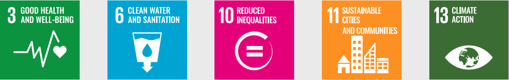
DRR Priorities
DRR1 : Develop integrated and multi-level governance of DRR
DRR2 : Implement Early Warning Systems (EWS)
DRR3 : Strengthen, raise awareness and share knowledge on risks
2.2.2 Financing needs for adaptation measures
The assessment of the achievements of the 1st NDC reveals that the adaptation funding committed during the 2015-2019 period is insufficient compared to the needs. The needs of the revised NDC are estimated according to two methods: the bottom-up approach, which is based on the sum of the costs of priority adaptation measures estimated by the sectors, and the top-down approach, which estimates the adaptation needs at 1% of GDP.
Estimated needs by sectors
As a result of the sectoral consultations conducted during the first half of 2021 (bottom-up approach), the estimated financing needs for the period 2021-2030 amount to more than USD 2,852 million. On an annual basis, compared to the 1st NDC, the needs double (285 million/year versus 127 million). Although this increase in needs is significant, it is still largely underestimated because not all needs could be accounted for following the consultations (particularly sectoral needs related to social, health and economic resilience).
Table 6: Summary of estimated adaptation financing needs by sector (bottom-up approach) (in millions of USD during the period 2021-2030)
|
Adaptation financing needs (in millions USD) |
National |
International |
Total |
|
Food resilience |
160,56 |
438,84 |
599,40 |
|
Water resilience |
143,93 |
510,84 |
654,77 |
|
Social resilience |
- |
1,50 |
1,50 |
|
Territorial resilience |
734,40 |
373,32 |
1.107,72 |
|
Economic resilience |
57,78 |
142,02 |
199,80 |
|
Health resilience |
0,18 |
3,22 |
3,40 |
|
Ecological resilience |
32,00 |
53,5 |
85,5 |
|
Natural disaster resilience |
80 |
120 |
200 |
|
Total for the period 2021-2030 |
1.208,85 |
1.643,24 |
2.852,09 |
|
Total / year |
285,21 |
||
|
As a reminder: 1st NDC funding requirements |
|||
|
Total for the period 2021-2030 |
- |
- |
1.916,00 |
|
Total / year |
127,73 |
||
Estimated needs based on macro-economic indicators
Considering the global simulations of adaptation needs developed by UNEP (top-down approach from the Adaptation Gap Report), Tunisia’s financing needs to respond to the high level of expected climate risks could amount to more than USD 400 million as early as 2021 (i.e., nearly 2% of the national budget or 1% of the Gross Domestic Product) to reach the annual cost of USD 475 million by 2030. Based on these annual simulations, the financing needs for the period 2021-2030 could amount to more than US$4,361 million.
Table 7: Summary of adaptation financing needs (top-down approach) (in millions of USD during the period 2021-2030)
|
National budget |
Financing (USD million) |
% Needs/ National budget |
||
|
National budget |
(Millions USD) |
|||
|
2021 |
1,8% |
20.036 |
388.0 |
2% |
|
2022 |
1,8% |
20.397 |
395.0 |
2% |
|
2023 |
1,8% |
20.764 |
402.1 |
2% |
|
2024 |
1,8% |
21.138 |
409.3 |
2% |
|
2025 |
1,8% |
21.518 |
416.7 |
2% |
|
2026 |
2,0% |
21.948 |
425.0 |
2% |
|
2027 |
2,0% |
22.387 |
433.5 |
2% |
|
2028 |
2,0% |
22.835 |
442.2 |
2% |
|
2029 |
2,0% |
23.292 |
451.0 |
2% |
|
2030 |
2,0% |
23.758 |
460.1 |
2% |
|
Total |
- |
- |
4.223 |
2% |
While it is still difficult to estimate the additional cost that any delay in funding would create- including the delay in implementing mitigation measures that will impact the magnitude of adaptation measures-it is unanimously recognized that the longer a country delays investing in its low-carbon and resilience pathway, the higher the costs of adapting to the effects of climate change for that country. In macro-economic terms, this could mean a doubling of Tunisia’s adaptation financing needs to 3-4% of the national budget by 2050, or more than USD 1 billion per year.
Priority international support required
Without neglecting the importance of national and private sources of financing, international financial contributions from TFPs will have to play a very significant role. Priority contributions (in the order of 60% of financing needs) should amount to more than US$240 million per year as of 2021, rising to more than US$285 million per year by 2030.
Tunisia has taken many steps to strengthen the institutional framework and improve climate governance in order to implement the Paris Agreement. Notably, within the Ministry of Local Affairs and the Environment, where the national focal point for the Paris Agreement is designated, the National Coordination Unit on Climate Change (UGPO-CC) was established by Decree No. 2018-263 of March 12, 2018, whose mission of coordinating climate action by public and private actors and measures taken to implement the NDC was specified, as was its central role in promoting the integration of climate change into all public policies and building capacity at the national and local levels.
In addition, two technical advisory committees, respectively in the areas of adaptation and mitigation, were established by Decree No. 2018-263 of March 12, 2018, and installed by a Decision No. 69-2020 of February 07, 2020.
Chaired by the Ministry of Local Affairs and the Environment, these advisory committees will contribute to the identification of national priorities, the preparation of national reports and all documents that fit into the enhanced transparency framework of the Paris Agreement, including facilitating the collection of data related to progress in implementation, as well as coordination with international and regional organizations for better use of opportunities for support, cooperation and financing of national programs and projects in the field of greenhouse gas mitigation.
Tunisia has launched important work to have a comprehensive national transparency system in accordance with the Paris Agreement Rulebook. This national transparency system will be strengthened, with a national emissions inventory system (NEIS) and an organizational, institutionalized, and regulatory framework (OIR framework) for monitoring and evaluating mitigation actions and progress in the implementation of the NDC, as well as for monitoring the financial support needed and received.
Specific work is being done in parallel to have an efficient RTI framework for reporting on climate change impacts and adaptation outcomes. This national transparency system will be operational during 2022, two years before the deadline prescribed by the Paris Agreement Rulebook.
Climate Empowerment Action (CEA)
If countries are to meet their NDC targets and sustain climate action over the long term, six action will require the implementation of six accompanying measures referred to by the UNFCCC Secretariat and UNESCO as ACE. This term refers to the measures that to be taken under Article 6 of the UNFCCC and Article 12 of the Paris Agreement, and Agreement, and is closely linked to the Sustainable Development Goals (notably SDG targets 4.7 and 4.7 and 13.3).
ACE specifically covers 6 core areas of intervention:
Education
Training
Public awareness
Public access to climate information
Public participation
International cooperation
Tunisia will accompany the implementation of its NDC by a concrete and structured program of measures of measures covering the six areas of the CEA19. This program will help to create a sustainable political will, strengthen societal ownership of the climate challenges, seriously mobilize youth, civil society, the private sector and all stakeholders, and finally to mainstream climate change and to include climate concerns and challenges in a sustainable development policy strongly supported by the Tunisian state.
Capacity building
Tunisia has made capacity building an important lever of the national policy to fight against climate change. In terms of mitigation, the capacity building measures required to facilitate the achievement of the objective of the updated NDC concern the training of actors, institutional strengthening, as well as technical assistance to sectoral mitigation programs (see details in section 1.3).
In addition, a National Capacity Building Plan for Tunisian actors in the field of climate change had been established in 2017. In the field of adaptation, this plan includes 13 actions around the following themes: basic concepts, strengthening the strategic and legislative framework, institutional governance, integration of adaptation into decision-making processes, economic analysis of climate change and adaptation, financing modalities of, development of climate services and products, organization and support for research on adaptation, tools for observing and monitoring the effects of climate change and MRV, information and knowledge management, education and continuing education, tools and technologies for adaptation.
The roadmap developed in 2019 for the implementation of the first NDC reconfirmed and completed the actions of the National Plan. This roadmap has provided for the strengthening of the following aspects in particular:
Monitoring and reporting,
Education, awareness of the effects of climate change, and good adaptation practices,
Integration of climate change into development planning,
Management of genetic resources (collection, conservation, valorisation...),
Negotiations on climate change,
Drafting of climate financing requests,
Rehabilitation of local know-how and spin-offs,
Monitoring and sustainability of works,
Conflict management and mediation,
Strengthening the human and material resources of the various key institutions.
Research and technology transfer
Research : National research priorities have clearly incorporated climate change adaptation and adaptation to climate change as well as the sectors considered as priorities at the level of the sustainable water resources management, biodiversity conservation and climate change, agriculture, coastal erosion and climate change, agriculture, coastal erosion and desertification, epidemics and diseases, development models and land use planning. It should be noted that note that the specific priorities for agricultural research (identified by IRESA) are in line with the in line with the priority actions in Annex 2. In addition to the national programs funded under the priorities, Tunisian research is very collaborative at the international level.
Indeed, Tunisia is an associated partner in the EU research program (Horizon 2020) and has demonstrated the capacity and expertise of its research structures to mobilize to mobilize the necessary funding and participate in a framework of scientific excellence.
The development of scientific research in the field of adaptation to climate change is a key pillar in the climate change is an essential pillar in the different stages of the adaptation process. It requires a holistic, multidisciplinary approach that considers the different nexuses and integrates global and local thematic models. All of this in a framework of RRI (responsible research and innovation) that involves several actors. In order to consolidate the national effort and consider the global nature of climate change, Tunisia will want to mobilize international cooperation to finance:
The co-construction of a multidisciplinary, impact-oriented (multi-profiles) national program that initiates a process of transformative and equitable adaptation in a sustainable manner equitable adaptation process;
The development of integrated models for the study of vulnerability with dynamic mapping and dynamic mapping and vulnerability trajectories well traced and applied to sectors, territories or production processes (integrated and adapted system of monitoring and monitoring and modeling system). The objective is to reduce the existing uncertainties in the analysis of the impact of climate change and to create tools for integrated quantitative assessment of risks and vulnerability. This will allow the design of adaptive management tools and to select appropriate measures, technologies and practices;
The development of digital innovation in the areas of adaptation;
The scaling up of innovative solutions through PPPs (Scale Up "ClimTECH")
In addition, the SNRCC (National Strategy for Resilience to Climate Change) of Tunisia (in progress) emphasizes the importance of developing and disseminating research and innovation in support of adaptation. In this framework, Tunisia commits to 2030 to accelerate the implementation of applied research programs, to support digital research and artificial intelligence for adaptation or to contribute to the establishment of a support and financing mechanism for ClimTech start-ups in order to meet the technological needs of the sectors.
It is also important to emphasize that all of the measures in the priority actions for adaptation (Annex 2) will include an applied research/research-in-action component, technology research/research-in-action, technology transfer and/or capacity building as appropriate to ensure a scientific basis, transfer of research results and innovative / adapted technologies and/or knowledge transfer. This strengthen the intended impact of the planned action and its sustainability.
Technology transfer programs will be necessary to allow Tunisia to access the main technological innovation niches related to the low-carbon transition, as well as the know-how and the appropriate industrial means to ensure the sustainability of its contribution. The Conference of the Parties of the Convention must mobilize the appropriate mechanisms to facilitate participation in international research and access to technological innovations (see details in section 1.3).
In addition, the TNA (Technology Needs Assessment) project assessed the needs for three key sectors: agriculture, water resources and coastal and marine areas. As a result of this assessment, a TAP (Technology Action Plan) was developed. The priority technologies selected are:
Conservation agriculture and payment for environmental services for the agricultural sector.
The implementation of a smart water system and an early warning system for the water sector.
The strengthening of the information and decision support system (SIAD) and coastal zone management for the coastal and marine sector.
Strengthening the role of women in the low-carbon transition will undoubtedly accelerate the achievement of the objectives set, especially in the renewable energy and green economy sectors, but also and especially in the AFOLU sector. In the sectors concerned, many opportunities exist that require talents and varied skills and especially complementary to which Tunisian women can respond, while allowing a fair distribution of benefits.
The inclusion of the gender dimension in the updated NDC reflects the commitment to use all available skills and human assets and validates Tunisia’s willingness to contribute to the achievement of the Sustainable Development Goals (SDGs) by 2030, almost all of which include a gender dimension.
To the efforts already initiated by the government in recent years on issues of gender equity and empowerment of women and youth, it will generalize and systematize the collection of quantitative and qualitative data disaggregated by sex, age and region for better analysis and more effective support for decision-making, to continue the promotion of gender equality and equity in the context of awareness programs and information aimed at policy makers and public officials but also the general public.
In terms of training, the aim will be to adapt training and skills development programs in the technical and non-technical fields of mitigation and adaptation to the needs/constraints of women and to facilitate their access to them so that female entrepreneurship can develop.
The government also intends to increase the participation of women and youth, with a view to achieving parity, in all consultation and governance bodies set up in relation to climate.
In addition, more efforts will be made to network women and youth so that they can benefit from each other’s experiences and strengthen their negotiating and decision- making power, as well as their contribution to programs aimed at both low-carbon transition and adaptation.
The adaptation component of the updated NDC identifies a set of gender-specific measures (see Annex 2) that measures (see Annex 2) that illustrate the importance of the issue for Tunisia and constitute an ambitious roadmap for 2030.
Information needed to ensure clarity, transparency and understanding of the NDC
|
1. Quantifiable information about the reference point, including, as appropriate, a reference year |
|
|
(a) Baseline year(s), base year(s), baseline period(s), or other starting point(s). |
2010 |
|
(b) Quantifiable information on the baseline indicators, their values in the base year(s), base year(s), base period(s) or other starting point(s) and, where applicable, in the target year |
The benchmark, expressed in tCO2/1000 dinars of GDP, is represented by the National Carbon Intensity, which is the ratio of net greenhouse gas emissions (expressed in tons of CO2 equivalent) to GDP (expressed in this NDC at constant 2010 prices). For the reference year 2010, the carbon intensity of Tunisia was 0.554 tCO2/1000 TD of GDP. |
|
c) For strategies, plans and actions referred to in Article 4, paragraph 6, of the Paris Agreement, where policies and measures as elements of nationally determined contributions where paragraph 1 (b) above is not applicable, Parties shall provide other relevant information |
Non Applicable |
|
d) Target in relation to the baseline, expressed numerically, for example as a percentage or amount of reduction |
Tunisia’s contribution is materialized by a 45% decrease of its carbon intensity in 2030 compared to that of 2010 Figure 1. The unconditional contribution based on Tunisia’s own means would induce a decrease of the carbon intensity of 28% in 2030 compared to that of the reference year 2010. |
|
e) Information on the data sources used to quantify the benchmark(s) |
The conditional contribution, based on substantial international support, would allow an additional reduction in carbon intensity of 17% in 2030 compared to the base year 2010. |
|
f) Information on the circumstances under which the country party may update the values of the benchmark(s). |
The calculation of the carbon intensity of the reference year 2010 was based on the data of the national inventory of GHG emissions of the year 2010, on the one hand, and on the value of the GDP of 2010 at constant prices 2010 (data from the National Institute of Statistics and the Central Bank of Tunisia) The most recent comprehensive national GHG inventory in Tunisia covered the years 2010, 2011 and 2012. Very recently, the Tunisian energy sector has benefited from an updated inventory targeting all years from 2010 to 2020. To this end, recalculations have been made for the years 2010, 2011 and 2012 for the energy sector. The other sectors have not yet been subject to an inventory operation for the years 2013 to 2020. This one should be launched very soon. At the same time, there may be recalculations for the process, AFOLU and waste sectors for the years 2010 to 2012, following possible methodological improvements or adjustments of data that may have become available. If this is the case, the values of the reference indicators could be updated. Moreover, the inventory operations in question were carried out by applying the IPCC guidelines of 2006. It is possible that Tunisia will opt in the future to use the 2019 IPCC guidelines. In this case, also, the values of the reference indicators could be updated. |
|
2. Timeframe and/or implementation period |
|
|
a) Timeframe and/or implementation period |
2021-2030 |
|
Annual or multi-year target? |
Single target year: 2030 |
|
3. Scope and coverage |
|
|
a) General description of the mitigation goal |
The updated NDC of Tunisia aims at a 45% decrease of its carbon intensity in 2030 compared to that of 2010. The «unconditional» contribution of Tunisia corresponds to a decrease in carbon intensity of 28% in 2030 compared to that of the reference year 2010. The «conditional» contribution foresees an additional decrease in carbon intensity in 2030 of 17% compared to the 2010 base year. |
|
b) Sectors, gases, categories, and reservoirs covered by the nationally determined contribution, including, as appropriate, in accordance with the IPCC Guidelines |
The updated NDC covers the entire national territory. It reflects all anthropogenic emissions and removals reported in the inventory chapter of the 2nd Biennial Report and the Third National Communication of Tunisia. It therefore includes:
|
|
c) Consideration of decision 1/ CP.21, paragraph 31 (c) and (d) |
Tunisia’s updated NDC includes all categories of anthropogenic emissions and removals covered by the IPCC2006 guidelines. No emission sources, sinks or activities that were covered by the first NDC have been excluded in this updated NDC. |
|
d) Mitigation benefits resulting from adaptation measures and/ or economic diversification plans, including description of projects, actions and initiatives specifically related to adaptation measures and/or economic diversification plans |
Several adaptation measures are expected to complement and enhance the mitigation outcomes of some mitigation measures, particularly in the AFAT sector. These include:
|
|
4. Planning process |
|
|
a) Information on the planning processes the country party has undertaken to prepare its NDC and, if applicable, the country party’s implementation plans, including: |
|
|
i) National institutional arrangements, public participation and engagement with local communities and indigenous communities and indigenous peoples, in a gender-sensitive manner. |
The updated NDC was prepared on the basis of broad consultations with the main stakeholders concerned by the issue of climate change in Tunisia, including public institutions, the private sector, civil society and experts operating in the various fields and sectors of GHG mitigation. These consultations took place under the aegis of the climate change focal point (MLAE), via the Management by Objectives Unit which is responsible for carrying out the monitoring and coordination program of activities relating to the implementation of the «Paris Agreement18». In the inter-stakeholder consultations, the CC focal point constantly relies on the sectoral focal points (established within the organizations concerned with GHG emissions and climate policies), but also on the two national committees in the respective fields of mitigation of greenhouse gas emissions and adaptation19. The preparatory phases of the updated NDC started in October 2020, with the launch of consultations, in the form of meetings and workshops, involving the main stakeholders involved. The consultations continued throughout the first half of 2021, aiming at establishing the state of play of the achievements over the period 2015-2020, then the development of prospective work intended to update the trajectories 2021-2030, with a view to updating the objectives of the NDC of Tunisia. Each stage of consultations was the subject of national workshops to present the results, as well as workshops and sectoral meetings ad-hoc. The consultation process was intensified until the validation of the updated NDC. The elaboration of Tunisia’s contribution was also largely based on existing sectoral and horizontal strategies, such as the national strategy on climate change elaborated in 2012, the energy efficiency strategy, as well as the AFOLU and waste sectoral strategies, without forgetting the different sub-sectoral initiatives (e.g., cement, HFCs, nitric acid), and also the first NDC (2015), and the first and second biennial reports. |
|
ii) Contextual issues: (ii)-a. National circumstances |
Geographical position
Tunisia is located in the north of Africa, on the southern shore of the Mediterranean and at the junction between the eastern and western Mediterranean basins. Tunisia is separated from Europe only by the Sicilian-Tunisian strait, 140 km wide. The total area of the country is 164 000 km2, of which about half is cultivable. Tunisia has 1,300 km of coastline, on both its eastern and northern sides. Tunisia is divided into two major geographical areas:
The relatively high latitude of Tunisia and its geographical stretching from north to south give it a succession of climatic zones ranging from subhumid in the extreme north, to semi-arid in the northwest and Cape Bon, to arid in central Tunisia to finally desert for the entire south. With a climate marked by aridity, Tunisia is considered among the Mediterranean countries most exposed to climate change, with the risk of a sharp increase in temperature. This increase would vary according to the regions, in the best case (RCP 4.5) between 1 ° C and 1.8 ° C by 2050 and between 2 ° C and 3 ° C at the end of the century. In the most pessimistic case (RCP 8.5), the increase could reach 4.1°C to 5.2°C at the end of the century. Projections also show a decrease in precipitation (-10% to 30% in 2050), a rise in sea level (30 cm to 50 cm in 2050) and an increase in extreme weather events (floods and droughts). These climate risks would have adverse social, economic, and ecological effects that would manifest themselves in the scarcity of water resources, the weakening of terrestrial and marine ecosystems, the decline of agricultural and tourism activities and the strengthening of the coastal economic activities. The national economyOn January 14, 2011, the Tunisian people revolted against the oppression of freedoms and the difficult socio-economic situation marked by unemployment and regional imbalance. Since then, Tunisia has entered a phase of political transition in which democratization and equitable and sustainable socio-economic development are the main priorities. The Tunisian economy has been strongly affected by the political instability and social demands that have accompanied this democratization process. Indeed, the average economic growth did not exceed 1.8% over the period 2010-2019, whereas it was more than 4% before 2010. The health crisis has had a very negative impact on the Tunisian economy, which experienced a recession of -8.6% in 2020. This level of growth has not created enough jobs to lower the unemployment rate which stood at 17.4% at the end of 2020, or 725 thousand unemployed including about 45% of young graduates. Tunisia relies heavily on the green economy and particularly investment in renewable energy and energy efficiency as measures to exit the effects of the pandemic of COVID-19 Sustainable developmentThe new Constitution of Tunisia has considered sustainable development and the right of future generations among the fundamental rights of Tunisian citizens (Preamble and Art. 12). The joint responsibility of the state and society in preserving water resources, fighting climate change and the right to a healthy environment for all citizens has been included as a priority in Article 45 of the constitution. In addition, the constitution provides for the establishment of five independent constitutional bodies, including one for sustainable development and the rights of future generations. Fight against povertyThe work of the latest national household survey in 2015 resulted in an estimated poverty rate of 15.2% in 2015 compared to 20.5% in 2010 and 23.1% in 2005. The extreme poverty rate was set at 2.9% in 2015 compared to 6% in 2010 and 7.4% in 2005. |
|
ii)-b. Best practices and experience in the development of the NDC |
Despite the efforts of the State, the total eradication of poverty is still difficult to achieve. Indeed, the current figures could be higher if the unofficially counted populations were included, and if the economic crisis of the last few years were taken into account. |
|
ii (c). Other aspirations and contextual priorities recognized upon accession to the Paris Agreement |
|
|
b. Specific information applicable to Parties, including regional economic integration organizations and their member States, that have reached agreement to act jointly under Article 4, paragraph 2 of the Paris Agreement, including the Parties that have agreed to act jointly and the terms of the agreement, in accordance with Article 4, paragraphs 16 to 18 of the Paris Agreement |
NA |
|
c. How the development of the NDC has been informed by the results of the global stocktaking, in accordance with Article 4, paragraph 9 of the Paris Agreement. |
The results of the global assessment presented trajectories largely below the emission caps needed to achieve the objectives of the Paris Agreement. In addition to the clear strengthening of its 2030 mitigation ambition in this NDC, as a response to the results of the global assessment, Tunisia has already placed itself, in its updated NDC which covers the period 2021-2030, in the launching pad of the objectives pursued by the Paris Agreement Moreover, in line with the recommendations of paragraph 1 of Article 4 of the Paris Agreement on the capping of emissions, Tunisia’s emissions trajectory in absolute terms marks the occurrence of peak emissions well before 2020. |
|
d. Each Party with an NDC under Article 4 of the Paris Agreement that consists of adaptation actions and/or economic diversification plans resulting in mitigation co-benefits consistent with Article 4, paragraph 7, of the Paris Agreement to submit information on: |
|
|
i. How the economic and social consequences of response measures have been considered in the development of the NDC. |
NA |
|
ii. Specific projects, measures and activities to be implemented to contribute to mitigation co-benefits, including information on adaptation plans that also produce mitigation co-benefits, which may cover key sectors, such as energy, resources, water resources, coastal resources, human settlements and urban planning, agriculture and forestry; and economic diversification actions, which can cover sectors such as manufacturing and industry, energy and mining, transportation and communications, construction, tourism, real estate, agriculture and fisheries |
Illustrative measures mentioned above (point 3.d) |
|
5. Methodological assumptions and approaches, including those for estimating and accounting for anthropogenic greenhouse gas emissions and, where appropriate, removals |
|
|
a) Assumptions and methodological approaches used to account for anthropogenic greenhouse gas emissions and removals in the nationally determined contribution, in accordance with paragraph 31 of decision 1/ CP.21 and the accounting guidelines adopted by the CMA |
Accounting of anthropogenic greenhouse gas emissions and removals: in accordance with the 2006 IPCC guidelines. The approach used by Tunisia in the accounting of emissions/removals will be, at the latest on December 31, 2024, strictly in accordance with the accounting guidelines for NDCs contained in Annex II of Decision 4/CMA.1. |
|
b) Assumptions and methodological approaches used to account for the implementation of policies and measures or strategies in the nationally determined contribution |
The LC scenario emissions anticipated by 2030 are the result of the implementation of all policies and measures. The same assumptions and approaches as in the GHG inventory are used for the accounting of the results of the implementation of policies/measures/ strategies in the NDC. |
|
c) Information on how the country takes into account existing methodologies and guidance under the Convention for accounting for anthropogenic emissions and removals in accordance with Article 4, paragraph 14, of the Paris Agreement |
Tunisia uses the 2006 IPCC Guidelines for National Greenhouse Gas Inventories. In its accounting of anthropogenic emissions and removals corresponding to the NDC, Tunisia has based itself on paragraph 14 of Article 4 of the Paris Agreement, which refers to Article 13 of the same agreement, which emphasizes environmental integrity, transparency, accuracy, completeness, comparability, consistency, and avoidance of double counting. |
|
d) IPCC methodologies and metrics for estimating anthropogenic greenhouse gas emissions and removals. |
Methodologies: 2006 IPCC Guidelines. Metrics: Global Warming Potential (GWP) values according to the IPCC Fourth Assessment Report - AR4- Climate Change 2007:
|
|
e) Sector, category, and activity specific assumptions, methodologies, and approaches consistent with the IPCC Guidelines, as appropriate, including: |
|
|
i. Approach to address emissions and removals induced by natural disturbances on managed lands. |
NA |
|
ii. Approach to accounting for emissions and removals from harvested wood products |
Emissions from informally harvested wood products are extrapolated to the base year and subsequent years based on historical survey data. Removals are estimated based on the 2006 IPCC guidelines. |
|
iii. Approach used to address the effects of age class structure in forests. |
Not considered |
|
f) Other assumptions and methodological approaches used to understand the nationally determined contribution and, where appropriate, estimate the corresponding emissions and removals, including: |
|
|
i. How the reference indicators, reference level(s), including, where appropriate, sector-, category- or activity-specific reference levels, are constructed, including, for example, the main parameters, assumptions, definitions, methods, data sources and models used |
The approaches for calculating GHG emissions are directly derived from the 2006 IPCC guidelines. The elaboration of the reference scenario was based on extensive modelling work developed for the different sectors. The calculation of emissions is based on the forecast of activity data, which is derived by simulation. The sectoral assumptions are described in section 1.5 of this updated NDC. |
|
ii. For Parties whose nationally determined contributions contain elements other than greenhouse gases, information on the assumptions and methodological approaches used in relation to those elements, as appropriate |
NA |
|
iii. For climate forcing factors included in nationally determined contributions and not covered by the IPCC Guidelines, information on how these factors is estimated |
NA |
|
iv. Additional technical information, as appropriate |
NA |
|
g) The intention to use voluntary cooperation under Article 6 of the Paris Agreement, if applicable. |
In order to finance its contribution conditional on obtaining international financial support, Tunisia intends to make full and voluntary use of the cooperative mechanisms provided for in Article 6 of the Paris Agreement, whether they are market-based (paragraphs 2 and 4 of Article 6) or non-market-based (paragraph 8 of Article 6). In general, Tunisia wishes to engage in these cooperative approaches on all sources eligible for Article 6 mechanisms, and more specifically to develop electricity production from all renewable energy sources, and the improvement of its energy efficiency, the control of emissions in the process sector, the controlled and environmentally improved management of waste and wastewater, as well as measures targeting agriculture and forestry and land use. Additional elements on this aspect are described in section 1.3 of this updated NDC |
|
6. How Tunisia considers its nationally determined contribution to be fair and ambitious given its national circumstances |
|
|
a) How the country Party considers its NDC to be fair and ambitious in light of its national circumstances |
Tunisia considers that its contribution is fair and ambitious, for three main reasons:
|
|
b) Considerations on equity |
The question of equity does not really arise in Tunisia. It is even to the country’s disadvantage Historically, the country has always been an insignificant emitter. Thus, despite its insignificant weight in global emissions (0.07% in 2010), and to contribute to the global effort, Tunisia is committed to reducing its carbon intensity significantly below that of 2010. Standing at 3.3 tCO2/capita in 2010, Tunisia’s per capita emissions by 2030 would reach 2.4 tCO2/capita, while the average per capita emissions in 2010 at the global level already reached 7 tCO2/capita and, likely, would increase by 203020. |
|
c) How Tunisia has taken into account Article 4.3 of the Paris Agreement |
The updated NDC raises Tunisia’s ambition to a 45% reduction in carbon intensity, compared to the 41% targeted by the first NDC. This target is the highest possible level of ambition for Tunisia, given the short period that still separates us from the target year (2030). |
|
d) How Tunisia has addressed Article 4.4 of the Paris Agreement. |
The intensity reduction target in 2030 refers to an intensity of an earlier year (2010). If the GDP expectations are realized, the 2030 intensity target would result in lower emissions than in 2010 in absolute terms. |
|
e) The manner in which Tunisia has taken into account paragraph 6 of Article 4 of the Paris Agreement. |
NA |
|
7. How the nationally determined contribution contributes to the achievement of the objective of the Convention as set out in Article 2 |
|
|
a) How the nationally determined contribution contributes to the achievement of the objective of the Convention as set out in Article 2 |
Tunisia considers that its updated NDC is consistent with the objective of the UNFCCC, as confirmed by the arguments developed in points 6a and 6b above. Tunisia’s updated NDC contributes to the objectives of Article 2 of the Convention to stabilize GHG concentrations in the atmosphere at a level that would prevent dangerous interference with the climate system. The Paris Agreement has set the maximum allowable temperature increase at 2°C. Over the period 2021- 2030, Tunisia is already within the 2°C trajectory. It will consolidate its downward trajectory after 2030 to reach that of 1.5°C. |
|
b) How the updated NDC contributes to Article 2.1(a) and Article 4.1 of the Paris Agreement. |
See 7a above Emissions cap has already been implemented in Tunisia |
Summary of priority adaptation actions for 2030
The updated NDC allows, with its cross-cutting «Resilience Star» approach that aims to address the country’s adaptation needs for the benefit of the people, to identify priority actions at the sectoral level that aim to maximize cross-sectoral co-benefits.
1.1 Food Resilience- FR
Priority 1: Achieve the digital transition of agro-sylvo-pastoral, livestock, fisheries and aquaculture production systems, improve the sharing of information, data and knowledge for a better resilience to the effects of climate change on territories and societies
Measure 1: To improve the monitoring of climate risks on agro-sylvo-pastoral, fisheries, and aquaculture production systems (national and regional levels), the modelling of medium- and long-term impacts on strategic products vulnerable to the effects of climate change and to ensure transparency.
Measure 2: Strengthen the capacity, creation and sharing of knowledge and know-how and adapt the transfer of research findings on adaptation to the effects of climate change to the needs of the profession (MAHRF executives, higher education, vocational training, and extension) (7 engineering schools, AVFA, ... etc.)
Measure 3: Create regional poles of research/action and extension/training on indigenous and introduced pastoral species in situ in regional pilot areas: Station EL GRINE (Kairoaun), SAWAF (Zaghouan).
Priority 2: Anticipate and support the transition to an agriculture resilient to the effects of climate change (agricultural products, livestock, fisheries and aquaculture, territories and farmers)
Measure 1: Finalize, validate and implement the priority measures of the National Plan for Adaptation of Tunisian Agriculture and Food Security to the effects of climate change (5 projects are funded),
Measure 2: Improving the conservation and development of indigenous genetic resources threatened by climate change
Measure 3: Improving the efficiency of green water by promoting rainfed and irrigated agriculture resilient to the effects of climate change (cultivation practices, seeds, ...)
Measure 4: Creation of 5 pilot areas for the development of organic agriculture: (Oasis, Hezoua/ Tozeur - Pistachio / Mejel belabbes / Kasserine - Figs, Kesra / Siliana - Pepper, Hawaria / Nabeul and Sejnane / Bizerte),
Measure 5: Scaling up the experience «legumes 1 - bean» and introduction of fodder legumes in suitable areas
Measure 6: Improve the development of natural resources to anticipate and accompany the transition to an agriculture resilient to water stress and low carbon
Measure 7: Operate and support the agro-ecological transition: animal/plant integration, valorisation of agricultural waste and use of adapted cultural and technological innovations (composting, ...)
Measure 8: Strengthen forage autonomy and creation of food reserves to better manage crises (waste reduction, stock management, diversification, quality improvement, adapted varieties,)
Measure 9: Integrate the impacts of climate change and adopt ICZM approaches and the use of soft and nature-based techniques in fisheries and aquaculture development strategies, programs and projects to improve the resilience of the sub-sectors to the effects of climate change
Measure 10: To better organize the fishing campaigns through a well-thought-out evolution of the fleet as well as a better exploitation of the potentialities of aquaculture
Measure 11: Reorganize the profession towards an increased autonomy of small fishermen, the organization of the sector and a better valorisation of fishery products for an improvement of the socio-economic resilience especially of vulnerable groups and women to the effects of climate change
Measure 12: Integrated rural development of basins and sub-watersheds vulnerable to climate change, depressions (sebkhas) and flood regulation
Measure 13: Rehabilitation / Development of rangelands and alfatière degraded in the Central and Southern regions
Measure 14: Fight against silting in southern Tunisia and support for the regionalization of implementation (biological and mechanical consolidation of works).
1.2 Water Resilience- WR
Priority 1: Improve the quantitative and qualitative management of conventional water resources in the face of climate change impacts
Measure 1: Program of modernization and rehabilitation of hydraulic systems (storage, mobilization and transfer infrastructures)
Measure 2: Program for the collection and transfer of surplus water from the North
Measure 3: Program of mobilization and management of surface water, collection of rainwater and artificial recharge of groundwater
Measure 4: Creation of new dams "melah amont - Barrage Mliz", rehabilitation of existing dams: Bzirk dam (Nabeul), El Kebir (Fahs) and raising of Siliana dam.
Measure 5: Program of protection of dams against silting and flooding
Measure 6: Program to strengthen and secure drinking water supply in vulnerable areas
Measure 7: Program of water saving and improvement of the efficiency of uses
Measure 8: Program for the preservation and recovery of the quality of water resources in the face of the impacts of climate change and the various forms of pollution
Measure 9: National program for the implementation of intelligent drinking water networks
Measure 10: Pilot project for the equipment of 140 SAEP/GDA by solar energy, i.e. the equivalent of 700 Kw (with co-benefits in mitigation)
Priority 2: Massify the use of non-conventional waters to face the scarcity of the resource due to climate change
Measure 1: Projectsof rehabilitation andcreationofirrigatedperimeters with treated wastewater (19) and their promotion in the governorates (15) of Mahdia, Nabeul, Gafsa, Kasserine, Gabes, Sidi Bouzid, Tataouine, Tozeur, Ariana, Kébili, Monastir, Sousse, Tunis, Mannouba, Ariana,
Measure 2: National Plan for Desalination by Renewable Energy (PNDER)
Measure 3: Projects to improve the quality of purified water to massify the reuse and diversify the uses (green spaces, industries, lagoons, golf, etc.)
Measure 4: Rural sanitation development project,
Measure 5: Program of adaptation to climate change of sanitation infrastructures and systems and increase their resilience to extreme risks and disasters,
Measure 6: Drainage water reuse program,
Measure 7: Implementation of the Water 2050 Strategy action plan
Measure 8: Equipping pumping stations of PPI / EUT by photovoltaic energy in Kasserine, Kairouan, Nabeul, Sfax, Siliana, Gabes and Gafsaa pilot project for the equipment of 140 SAEP / GDA by solar energy or the equivalent of 700 Kw (mitigation / co-benefits)
Measure 9: Pilot project for the equipment of 140 SAEP/GDA by photovoltaic energy (with mitigation co-benefits)
Priority 3: Strengthen the technical, scientific and institutional capacities of water stakeholders to adapt to climate change
Measure 1: Integration of climate change adaptation in higher education curricula and training for water professions
Measure 2: Effective implementation of institutions, governance and reforms provided for in the new Water Code
Measure 3: Setting up of financing mechanisms and assembly of projects for the adaptation of water management
Measure 4: Projects to promote the nexus approach: water-agriculture, energy-ecosystem,
Measure 5: Improvement of the water accounting system
Measure 6: Updating of the rules and techniques for the design of hydraulic works according to climate change,
Measure 7: Operationalization of the SINEAU as a monitoring and information system on climate change impacts and adaptation actions
Measure 8: Implementation of the updated National Drought Plan,
Measure 9: Consolidation and consideration of climate change in the policy of encouragement of the State in the field of Water (all sectors),
Measure 10: Preparatory actions for the introduction of a «climatic» pricing of water on withdrawals from the aquifers,
Measure 11: Development of local plans for the development and use of water resilient to climate change (PLAUERCC),
Measure 12: Financing of multidisciplinary research projects/actions and federating scientific skills to create and/or improve our national reference systems in the field (vulnerability to climate change, adaptation capacities, innovative measures, etc.).
1.3 Social Resilience- SR
Priority 1: Endorse the national policy on gender mainstreaming and the fight against climate change
Measure 1: Include gender equality criteria in public policies from their design phases to ensure that society’s resources are equitably distributed between men and women in order to correct the social inequalities that aggravate the effects of climate change
Measure 2: Consider the relationship between gender and climate change as an indispensable part of development strategy at the policy level, in planning and strategic choices for development in its various stages - from diagnosis to evaluation
Measure 3: Evaluate the efforts made by the public authorities to strengthen the national legal, legislative, regulatory and institutional arsenal for the promotion of gender equality.
Measure 4: Conduct quantitative impact analyses of several pro-gender policy scenarios on gender inequality and economic growth in Tunisia.
Measure 5: Strengthen the gender-responsive policy framework: identify current levels of women’s participation in climate change decision-making at the local and national, regional levels. Identify the barriers preventing women from being heard.
Component « Strengthen women’s economic empowerment in the face of climate change impacts»
Measure 1: Strengthen the recruitment of women in the civil service and the private sector, especially in the tourism and ICT sectors and support the protection of women from the status quo and from those who defend male supremacy and religious conservatism.
Measure 2: Strengthen the guidelines for employability and creation of innovative projects in green jobs, small and medium enterprises based on the principles of social economy and solidarity focused on the environment and adaptation to climate change
Measure 3: Integrate the issue of youth employment and equality of women and men in the economic choices that offer opportunities in the fields of environment focused on SSE, alternative tourism and agro-ecology
Component « Support the inclusion of gender issues and women’s participation among political leaders and public affairs managers »
Measure 1: Initiate the formation of a committee of parliamentarians from all regions of Tunisia dedicated to the cause of women, particularly those in rural areas, in order to support the institutionalization of gender and its integration into public policies through climate change measures
Measure 2: Support the knowledge and training of parliaments in the areas of gender equality, gender and climate change in order to strengthen, get closer to gender parity and achieve representation of the population in all its diversity including all categories of women.
Measure 3: Strengthen the skills of parliamentarians and local government officials in the areas of gender-sensitive communication, gender ethics and gender intersectionality in environmental and climate change policies
Priority 2: Position gender as a driving force in Tunisian agricultural policy
Measure 1: Define a gender and climate change strategy for the agricultural sector and issue a clearly defined set of gender-related performance indicators and sex-disaggregated targets to measure progress and monitor changes and impacts
Measure 2: Base adaptation programs at the national, regional, and local levels on the needs of both women and men farmers, with additional research to better engage women and build their resilience and adaptation.
Measure 3: Reform the participatory paradigm (including participatory rural research tools) by integrating systemic data collection and information on the links between gender and climate change, food security and risk prevention.
Measure 4: Examine and plan action on the impacts of deteriorating climatic conditions, which may reduce yields of food crops essential to local subsistence, and the risks of food shortages that have been aggravated by the pandemic situation (affecting the economic and social stability of women, particularly those in disadvantaged regions).
Measure 5: Develop support for rural women’s access to economic opportunities in the cities by establishing a variable and decentralized geometry (decent employment, salary, social coverage, access to productive assets, etc.),
Measure 6: Capitalize and proceed to the scaling up and replicability of knowledge from studies and strategic documents and projects that have involved interventions on gender and climate change
Measure 7: Institute a strategy to ensure equality between women and men in the OPAs (GDAs, hydraulic groupings, etc.)
Priority 3: Ensure gender justice in water resilience policy
Measure 1: Transform gender inequalities at scale by promoting gender-transformative planning, decision-making and institutional development for water and food security investments
Measure 2: Significantly increase women’s access to information, decision-making power over practices and management
Measure 3: Establishastudy ofthe experiences of resilience andadaptationin water management by women, women’s organizations (GDA or / GH) in order to orient their power of involvement and decision of gender (consideration of women as a vector of communication and behaviour change essential / management and mediation within the household and community)
Measure 4: Initiate the use of ICTs and cell phones among water users’ organizations in order to facilitate and optimize communication on meteorological aspects, equipment breakdowns and the management of AEPR and irrigation:
Measure 5: Strengthen the capacities of water sector decision makers in the areas of negotiation of public water policies, governance integrating the areas of gender and participatory approaches, IWRM, Nexus,
Measure 6: Develop awareness in the health, agriculture and BR management sectors and sanitation products on the role of women in the field of the environment, climate change, health protection and prevention of living environments, particularly in the post-Corvid situation19
Measure 7: Initiate synergies and communities of practice in the water policies and sectors integrating the nexus, gender, GIRE approaches within the Ministry of Agriculture, the services and organizations under the supervision of the environment (NSO, NAWM) as well as the services of the health sector and hygiene preservation.
Priority 4: Operationalize women’s full participation in policies and areas of natural disaster resilience and climate-related risk reduction
Measure 1: Facilitate women’s access to official disaster warning and management mechanisms and channels, and to all information relevant to disaster prevention and preparedness.
Measure 2: Take into account the active and transformative participation of women in the development and implementation of disaster prevention and mitigation strategies.
Measure 3: Popularize and disseminate scientific and technical discourse on the aspects of GHG, RCC of adaptation and attach it to the daily lives of Tunisian women in fragile and vulnerable environments
Measure 4: Strengthen the knowledge and awaken women users of the RN in the GDA, elected officials, technical directors or office agents, women in local technical administrations and women representatives of local communities on conflicts and insecurity situations caused by natural disasters (radio session in local media, training, and round table)
Measure 5: Initiate training in the areas of conflict resolution and mediation expertise integrating a gender perspective throughout the process, «Do No Harm» approach combined with specific participatory approaches focusing on intersectionality and gender transformative effects
Priority 5: Recognize and scale up the role of women in the preservation of ecosystems
Measure 1: Promote and involve more research on the knowledge of ecosystem services and on climate-biodiversity-human health interactions and the role of gender
Measure 2: Raise awareness among women and community organizations on the essential value of preserved and diversified ecosystems as an ally in the fight against climate change and natural risk management
Measure 3: Support women’s full participation as producers, consumers, and owners of small and medium-sized enterprises and key decision makers to create a key vehicle for change
Priority 6: Integrate an inclusive and systemic approach to gender in health policy
Measure 1: Improve women’s health services and delivery through prevention through educational promotion, empowerment of professionals involved in organizing awareness campaigns for women’s productive and reproductive health, as well as to prevent and support women against domestic and gender-based violence
Measure 2: Specify adequate human resources policies in the health sector, capable of reducing regional disparities, particularly in terms of access to health care, and rethink the programming of specialties and the allocation of maternal and child health specialists and programs in the interior regions of the country.
Priority 7: Position women, youth, and local action groups at the centre of the development of alternative and sustainable tourism offerings
Measure 1: Develop a strategy for the integration of the son-in-law in the sector in order to guide the involvement of women in tourism, handicrafts, production of local products, and in the development of intangible cultural heritage
Measure 2: Consolidate the capacity of youth and women’s associations to create territorial synergies for an alternative tourism offer (rural tourism, agri-tourism, valorisation of local know-how such as cooking and local products
Measure 3: Support the empowerment of women and youth through inclusive and alternative tourism
Priority 8: Priorities related to communication, advocacy and strengthening of gender and climate action
Measure 1: Effectively combat gender stereotypes and sexism and misconceptions that arbitrarily assign women and men roles determined and limited by their sex.
Measure 2: Stimulate areas of research on gender mainstreaming in climate change and encourage studies in the areas of gender and climate governance in university curricula and professional training curricula
Measure 3: Develop the capacity of women’s organizations in PAOs, associations and professional organizations to communicate about climate change environmental research and policy in order to equip them to develop and implement relevant and appropriate adaptation policies and programs that take into account local contexts while prioritizing democratic and participatory approaches that ensure women’s sustained involvement.
Measure 4: Support civil society’s knowledge of gender issues related to climate change to strengthen the action and professionalization of a pluralist civil society, aware of the priorities in terms of political advocacy
Measure 5: Support associations working at the local level to promote knowledge on climate issues in local territories and rural communities and strengthen information and mobilization campaigns for youth and women on gender and climate change issues
Measure 6: Boost alliances between professional associations and state institutions in order to promote and influence the integration of gender and youth as a crucial segment for socio- economic development integrating issues of rights, environment and climate change
Measure 7: Promote and encourage among decision makers in the adaptation and professional sectors and trade unions (women entrepreneurs, trade union, UGTT and SYNAGRI) sufficient knowledge on gender issues and climate policies in order to guarantee women’s economic rights and improve equal opportunities at work
Measure 8: Train journalists by integrating women and youth into the media space on issues related to climate change, gender and environmental issues
Priority 9: Strengthen the involvement of gender in coastal resilience
Measure 1: Organize the availability of data on climate impacts on the coast through information dissemination mechanisms and content to raise awareness among girls and women and facilitate their understanding of the complexity of extreme climate phenomena in the coastal context, islands and islets.
Measure 2: Identify and capitalize on local practices and strategies of adaptation and risk management by involving the local population and women in order to further guide adaptation action and resilience (including through ancestral solutions and local and non-technical know- how).
Measure 3: Define global but also variable geometry approaches to introduce green entrepreneurship according to spaces and environments while taking into account socio- economic factors integrating women (while considering potential synergistic and antagonistic effects between local and global environmental changes).
Measure 4: Support women and youth to exploit the potential of alternative tourism in the cities and towns of the coastal environment.
Priority 10: Strengthen the social protection of the most vulnerable households and communities («leave no one behind»)
Measure 1: Study the institutional and financial feasibility of an Adaptive Social Protection (ASP) system that targets the most vulnerable populations, integrating the needs and interests of women.
Measure 2: Formulate social protection programs through the selected system that increase the adaptive capacity of households and communities.
Measure 3: Ensure the evolution of social protection programs to expected climate events and risks related to climate change.
1.4 Territorial Resilience - TR
Priority 1: Integrate vulnerability and risks related to climate change into territorial planning processes
Measure 1: Legal frameworks for land use planning that are sensitive to climate change, in particular by explicitly introducing the fight against climate change as a principle in the new Land Use and Urban Planning Code)
Measure 2: Update the planning approach to integrate climate change (establishment of a methodological toolbox that integrates climate change and land use planning for the preparation and development of five-year plans)
Measure 3: Establish a monitoring and evaluation system for the impacts of climate change (take advantage of the creation of the ODT to make it a reference institution for the M&E of phenomena related to climate change)
Measure 4: Consideration of a climate risk budget in territorial planning (define and introduce new provisions in the future regulations that codify the new organic law on the budget to provide guidance on the integration of adaptation needs in sectoral and local budgets).
Priority 2: Integrate climate change risks and adaptation needs into local development plans and urban planning
Measure 1: Updating of TORs for studies related to the development of PAUs and integration of climate change issues
Measure 2: Adaptation of the local and participatory planning process to integrate climate change aspects (updating of methods, provision of methodological toolboxes, training of municipal planning officials)
Measure 3: Establishment of reference tools in terms of climate (generalize / systematize the development of charters of sustainable development and climate plans (such as the model SDAZS of the island of Djerba))
Measure 4: Integration of citizens and civil society in actions targeting adaptation to climate change (creation of a «civil climate service» to involve civil society and citizens in the adaptation to climate change).
Measure 5: Develop new eco-construction spaces
Priority 1: Produce and share information, knowledge and know-how to improve the resilience of the coastal sector to the effects of climate change and natural disasters
Measure 1: Improve the efficiency of the national coastal observation network (equip missing stations, renew equipment, update the Information System, integrate monitoring indicators for adaptation and the coastal and marine environment)
Measure 2: Improve the management of the Public Maritime Domain by considering the effects of climate change (planning).
Priority 2: Develop and integrate innovative processes, methods and tools that integrate climate change and natural disaster risks into planning in the coastal sector
Measure 1: Make systematic and mandatory the use of Integrated Coastal Zone Management (ICZM) principles and the integration of climate change into planning
Measure 2: Evaluate the cost of strategic retreat with different scenarios of retreat (social, economic, and environmental)
Measure 3: Generalize the Master Plans of Coastal Development to the coastal municipalities (with Jerba Island as a model) by integrating gender
Measure 4: Establish emergency response plans in sensitive and threatened areas
Measure 5: Redevelopment and relocation of industrial zones.
Priority 3: Program for the management, protection and rehabilitation of coastal and marine landscapes and ecosystems
Measure 1: Protect and preserve the goods and services of coastal and marine ecosystems vulnerable to pollution and other effects of climate change
Measure 2: Rehabilitation and protection against erosion (area between Ras Blat and the commercial port in Bizerte, area of Chatt Mami, area between Sousse South and Skanes in Monastir, area of Aghir in Djerba, area between Nabeul and Hammamet, area between Gammarth-Carthage, ...)
Measure 3: Strengthen the financing mechanisms by innovative economic instruments
Measure 4: Protection of coastal aquifers from the risks of marine intrusion
Measure 5: Extension, rehabilitation, and protection of fishing ports in line with the results of the master plan of ports and taking into account the impacts of climate change
1.5 Economic Resilience – ECOR
Priority 1: Modernize information management, facilitate access to and sharing of knowledge and forecast risks related to climate change
Measure 1: Undertake, in consultation with stakeholders, prospective studies on the vulnerabi- lities, costs of inaction and adaptation options of the main vulnerable economic sectors (tou- rism, buildings/constructions, banking and finance, transport, energy, digital, etc.)
Measure 2: Define a framework for assessing the impacts of climate change on the profitability of economic projects and criteria to help guide investments
Measure 3: Update the digitization of coastal tourism potential and extend the exercise to other natural, social, heritage, cultural ... of the interior of the country.
Measure 4: To strengthen the adaptation capacities of the actors of tourism by the development of knowledge, education and training.
Measure 5: Develop a communication program oriented on the effects of climate change and good practices/conducts that target all economic actors, including tourism and its national and international customers.
Priority 2: Increase the resilience of economic sectors, including tourism and its sub- sectors, of their actors and rationalize the use of resources
Measure 1: Control the use of conventional water resources in tourism establishments, rationalize their use in the components of the tourism chain: transport, accommodation, catering, services, ... and, resort to non-conventional water
Measure 2: Integrate the effects of climate change and extreme phenomena into the planning processes of future tourism areas and structures.
Measure 3: Improve the resilience of small and medium-sized hotels to the risks of climate change and the disasters that are generated by it, by associating them with an ecological certification program applied to the tourism sector such as the «Green Globe», «Travelife», green key, etc.
Priority 3: Improve the attractiveness of the territories and diversify the tourism offer by promoting the territories
Measure 1: Increase the resilience of coastal tourism infrastructures to the effects of climate change (ENAM and extreme phenomena) and develop the regional potential for diversification of the offer.
1.6 Health Resilience – HR
Priority 1: Strengthen the capacity of the public health sector to better integrate climate integration and the establishment of a climate-resilient health infrastructure.
Measure 1: Improve understanding of the adverse effects of climate change on the population and population and service delivery.
Measure 2: Improve skills to evaluate the effectiveness of interventions and systems under different under different climate conditions.
Priority 2: Strengthen the surveillance of climate-sensitive diseases and develop the capacity for early detection and early warning of phenomena with epidemic potential
Measure 1: Support the National Observatory of New and Emerging Diseases (ONMNE) in strengthening its epidemiological surveillance, monitoring, and alert information system, with a view to generating health alerts
The sentinel network based on emergencies (SU),
The sentinel network based on free practice physicians (MLP),
Event-based surveillance network (EBS),
West Nile Early Warning System (VWN) network,
The development and implementation of the E-CRF application in relation to the viral hepatitis registry in Tunisia
Measure 2: Consolidate entomological surveillance through its automation and its extension to all potential sites (programming of regular visits to the development sites of disease vectors, characterization of these sites, determination of the density of pests, etc.).
Measure 3: Develop a geographic information system (GIS) for diseases with epidemic potential, particularly those with vector transmission.
Measure 4: Consolidate the management of health risks related to food through the upgrade and automation of the procedure for collecting and archiving information
Measure 5: Provide training in epidemiology to doctors and paramedics working in health facilities
Priority 3: Develop the capacities of the health system and empower it to face the health risks linked to climate change
Measure 1: Upgrade the health information system and orient it towards early warning and detection of diseases with epidemic potential and climate-sensitive diseases.
Measure 2: Strengthen the technical skills of the health system through the acquisition of appropriate tools and technologies to improve and upgrade health risk management and decision making.
Measure 3: Revitalize and put in place all the elements of the implementation of the response plan for diseases with epidemic potential, in particular through the training of stakeholders on the SOPs of the plan, the programming, on a regular basis, of simulation exercises and adaptation to different situations.
Measure 4: Set up an operational Decision Support System (DSS), including modelling, management and prediction tools for these health risks related to climate change.
Measure 5: Develop and implement an innovative communication/information/awareness program for the population on the effects of climate change and measures for prevention and adaptation to health risks.
Priority 4: Strengthen the role of health in leadership and intersectoral collaboration and promote applied research
Measure 1: Develop a procedure for integrating health risks related to climate change and health impact studies into development projects, particularly at the level of Environmental and Social Management Programs (ESMP).
Measure 2: Strengthen and institutionalize through regulatory texts as well as operational work procedures, all existing multisectoral actions: water monitoring, air quality monitoring as well as the early warning system for climate risks
Measure 3: To launch calls for tender for multidisciplinary research projects and federate the scientific skills of different departments to meet the needs and expectations
Measure 4: Strengthen multidisciplinary research on emerging and re-emerging diseases and chronic diseases and analyze the cause and effect relationship with climate change
1.7 Ecological Resilience – ECOLR
Priority 1 (productive ecosystems): Monitor, protect, rehabilitate and rationalize the use of natural resources, achieve neutrality in land degradation and ensure the sustainability of goods and services provided by natural ecosystems.
Measure 1: Implement a system of monitoring, tracing and surveillance of the modalities of introduction and dispersal routes of invasive alien species (IAS) and assess their impacts on exploitable resources and coastal ecosystems,
Measure 2: Improving the conservation and valorisation of indigenous genetic resources threatened by climate change
Measure 3: Strengthen forage autonomy (waste reduction, stock management, diversification, quality improvement, adapted varieties, etc.)
Measure 4: Rehabilitation of forest nurseries and development of indigenous species, resilient to climate change and multiple uses (8 nurseries) - 1 billion / nursery,
Measure 5: Involvement of the private sector in the reforestation effort through melliferous, indigenous and climate change resilient plantations,
Measure 6: Improve warning systems and protection of forests against climate risks (fires, new diseases, ...),
Measure 7: Set up specific anti-fire measures (opening and maintenance of forest tracks and firebreaks and maintenance of forest tracks and firebreaks and mixed reforestation by deciduous and and coniferous species...)
Measure 8: Conserve and develop in urban and peri-urban areas forest, agricultural and park spaces to improve the resilience of cities: thermal comfort, air quality, flood risks, ...
Measure 9: Integrate climate change considerations into the development and management plans of natural ecosystems (forests, rangelands, wetlands and protected areas) and anticipate their transformations, and encourage co-management with local populations
Measure 10: Anticipate climate risks and assist the transformation of natural ecosystems and the migration of species to favourable areas (forests, rangelands and steppes),
Measure 11: Conservation of the ecological functions of low-lying coastal areas and respect for the right to ecological waters (Sebkhas, Ramsar, National Parks, ...)
Priority 2 (protection and conservation of biodiversity): measures selected from the Strategy and National Action Plan for Biodiversity (NBSAP) established by Tunisia by 2030 under the Convention on Biological Diversity (CBD).
Measure 1: Promote the integration of biodiversity and ecosystem services in value chains (Action 19 NBSAP)
Measure 2: Development and implementation of a national program and sub-programs to improve knowledge of biodiversity in arid and desert areas, wetlands, marine areas and coastal areas (Action 22 a), b) and c) NBSAP)
Measure 3: Develop and implement a program for the prevention and control of forest fires
Measure 4: Adapt forest biodiversity to climate change (Action 33 a) NBSAP)
Measure 5: Adapt biodiversity in rural areas to climate change (Action 33 b) NBSAP)
Measure 6: Adapting biodiversity in coastal ecosystems (Action 33 c) NBSAP)
Measure 7: Develop and implement a strategy to combat invasive alien species (Action 35 NBSAP)
Measure 8: Develop and implement a program to improve the status of biodiversity in arid and desert environments (Action 38c) NBSAP)
Measure 9: Implement the action plan of the strategy for sustainable development of Tunisian oases (Action 42 NBSAP)
Measure 10: Develop and implement a strategy and action plan for the conservation and management of biodiversity of wetlands, marine and coastal (Action 43 NBSAP)
Measure 11: Consolidate protection and restoration actions to improve the resilience of ecosystems and their ecosystem services (Action 45 NBSAP)
1.8 Climate-related natural disaster resilience - CNDR
The integrated, multi-level approach to DRR involves both forward-looking and remedial, and where appropriate, compensatory risk management. This approach requires a clear division of responsibilities between the central government, the deconcentrated authorities and the local authorities, and the private sector.
Priority 1: Develop integrated and multi-level governance of DRR
Measure 1: Establishment of an appropriate legislative and institutional framework, making it possible to establish DRR as a national, multi-sectoral and multi-disciplinary priority integrating the diversity of actors involved, which requires in-depth reform of Law n°91-39 of June 8, 1991, relating to the fight against disasters, their prevention and the organization of relief, and its implementing decree n°93-942 of 1993.
Measure 2: Integration of DRR in the National Adaptation Plan (NAP), to promote sustainable food security and through land use planning
Measure 3: Support for the adoption of concerted local strategies for disaster risk reduction and the provision of dedicated resources for their implementation
Measure 4: Systematic application of Risk Informing Programming/Risk Informed Development tools to inform and influence strategies and decision-making
Priority 2: Implement Early Warning Systems (EWS)
Measure 1: Deployment of early warning systems, particularly for floods and forest fires, informed by national authorities and relayed by competent local authorities through information channels and tools adapted to all audiences.
Measure 2: Establish mechanisms for multi-level and inter-sectoral coordination of intervention measures with early warning systems
Priority 3: Strengthen, raise awareness, and share knowledge on risks
Measure 1: Raising awareness among stakeholders and communities of the local strategies put in place for crisis management and disaster risk reduction
Measure 2: Promoting the Peace, Recovery and Development Nexus in DRR decisions
Measure 3: Advocate for alignment with the Grand Bargain for multi-year, integrated and inclusive funding between donors and humanitarian organizations to improve the efficiency and effectiveness of humanitarian action
This increase in Tunisia's ambition is being achieved despite a very unfavorable national context on the threefold economic, social and health.↩
Carbon intensity is the ratio of net emissions to GDP (at constant 2010 prices). The net emissions result from the aggregation of net GHG emissions from the 4 IPCC sectors (Energy, industrial processes, agriculture; forests and land use change -AFOLU, and waste. change, and waste).↩
Tunisia's first NDC aimed to reduce its carbon intensity by 41% between 2010 and 2030.↩
For Renewable Energies, wind and photovoltaic technologies each account for 42% of the investment and the rest is divided between CSP, biomass and solar thermal.↩
The building sector is the main consumer of final energy (37% in 2019, including biomass-energy). It is also involved through the building materials industries, which are among the sectors that emit the most GHGs. Taken as a whole, the building sector would represent from upstream to downstream around 50% of the final energy demand in Tunisia, and at least 55% of GHG emissions attributable to energy in 2019.↩
In the form of numerous national and sectoral workshops, as well as sectoral and individual meetings with key stakeholders.↩
New version of Medpro.↩
These two projects were closed between 2016 and 2018, but it is assumed that the degassing systems will be maintained until 2025. Beyond that, it will be considered in the BaU that the Tunisian State will not be able to renew the degassing equipment, nor to ensure their maintenance, and their management in general.↩
Secondary catalyst↩
The fishing sector induces GHG emissions due to fuel consumption. In the IPCC GHG inventory nomenclature, fishing is included in the energy component, as a sub-sector of agriculture and fishing.↩
The classic actions of reinforcement of the reforestation and conservation actions already considered in the first NDC, are now considered in an integrated form.↩
Energy recovery actions are mentioned in this section due to their original belonging to this sector, but the results of these actions are incorporated in the low-carbon scenario of the energy sector.↩
To assess the macroeconomic impacts of NDC implementation in the energy sector, the ThreeME general equilibrium macroeconomic model adapted to the Tunisian context was used.↩
Scenario RCP 8.5 à l’horizon 2050.↩
APAL - UNDP - FEM 2015 : The Tunisian coastline: key figures. Dec. 2015, 75p. Document published in the framework of the project "Addressing climate change vulnerabilities and risks in vulnerable coastal areas of Tunisia" (https://info.undp.org/docs/pdc/Documents/TUN/Livret%20chiffres%20littoral-FINAL.pdf)↩
Results published in the National Adaptation Plan Report (NAP-food security) - phase 2 - 2021-2021. Document being published by MARHP and AFD (Ministry of Agriculture, Hydraulic Resources and Fisheries - French Development Agency).↩
Op. Cit 19.↩
http://www.environnement.gov.tn/index.php/fr/environnement-en-tunisie/les-changements-climatiques/engagements-et-priorites-de-la-tunisie-enver-tu-de-l-accord-de-paris-sur-le-climat↩
Created by virtue of Government Decree No. 69-2020, dated February 7, 2020.↩
Given the unlikelihood of a global peak in emissions by 2030.↩